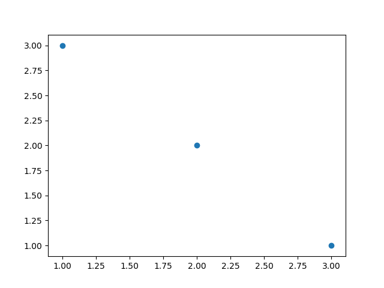
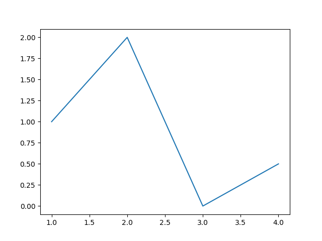
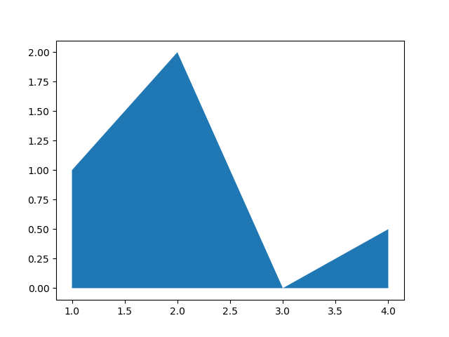
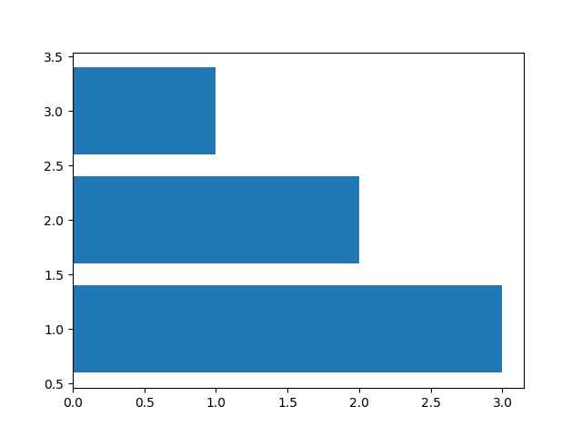
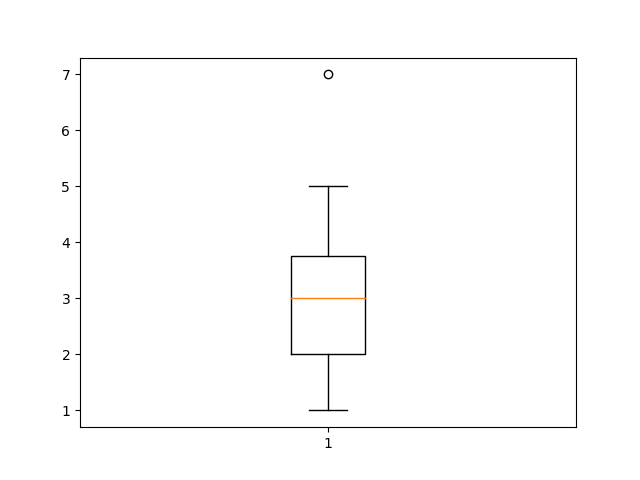
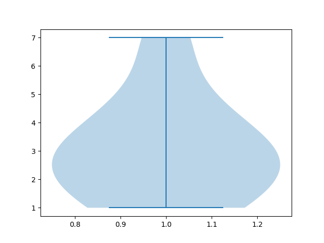
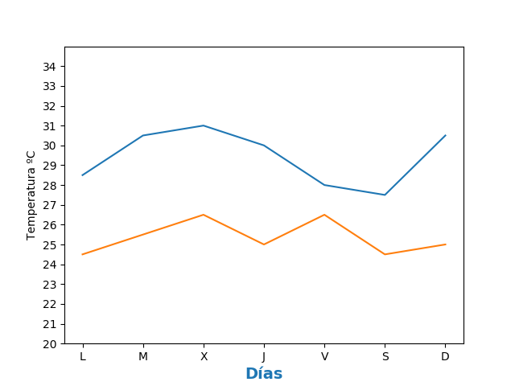
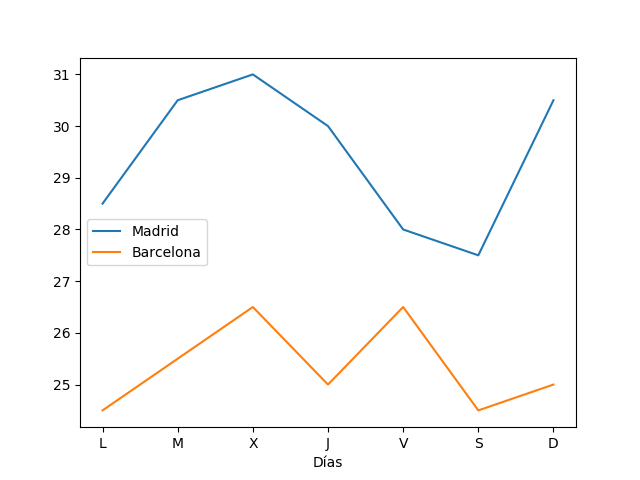
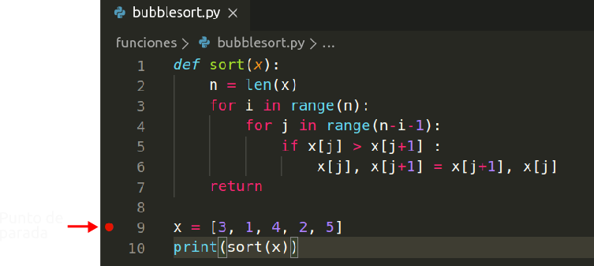
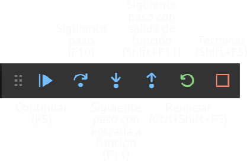

<!DOCTYPE html>
<html lang="en">
  <head>
    <meta charset="utf-8" />
    <meta name="viewport" content="width=device-width, initial-scale=1.0, maximum-scale=1.0, user-scalable=no" />

    <title>Manual de Python</title>
    <link rel="shortcut icon" href="./favicon.ico"/>
    <link rel="stylesheet" href="./dist/reveal.css" />
    <link rel="stylesheet" href="./dist/theme/black.css" id="theme" />
    <link rel="stylesheet" href="./css/highlight/monokai.css" />
    <link rel="stylesheet" href="./_assets/custom.css" />
    <script src="https://kit.fontawesome.com/c743eb3668.js" crossorigin="anonymous"></script>

  </head>
  <body>
    <div class="reveal">
      <div class="slides"><section  data-markdown><script type="text/template">

# Manual de introducción a Python

<div style="text-align:center">
Autor: Alfredo Sánchez Alberca (<a href="mailto:asalber@ceu.es">asalber@ceu.es</a>)<br/>
<a href="http://aprendeconalf.es">http://aprendeconalf.es</a>  

</div>
</script></section><section  data-markdown><script type="text/template">
## ¿Qué es Python?

[Python](https://www.python.org/) es un lenguaje de programación de alto nivel multiparadigma que permite:
- Programación imperativa
- Programación funcional
- Programación orientada a objetos

Fue creado por Guido van Rossum en 1990 aunque actualmente es desarrollado y mantenido por la [Python Software Foundation](https://www.python.org/psf-landing/)
</script></section><section  data-markdown><script type="text/template">
## Principales ventajas de Python

- Es de código abierto (certificado por la OSI).
- Es interpretable y compilable.
- Es fácil de aprender gracias a que su sintaxis es bastante legible para los humanos.
- Es un lenguaje maduro (29 años).
- Es fácilmente extensible e integrable en otros lenguajes (C, java).
- Esta mantenido por una gran comunidad de desarrolladores y hay multitud de recursos para su aprendizaje.
</script></section><section ><section data-markdown><script type="text/template">
## Tipos de ejecución

### Interpretado en la consola de Python

Se ejecuta cada instrucción que introduce el usuario de manera interactiva.

```sh
> python
>>> name = "Alf"
>>> print("Hola ", name)
Hola Alf
```
</script></section><section data-markdown><script type="text/template">
### Interpretado en fichero

Se leen y se ejecutan una a una todas las instrucciones del fichero.

```python
# Fichero hola.py
name = "Alf"
print("Hola ", name)
```

```sh
> python hola.py
Hola Alf
```

También se puede hacer el fichero ejecutable indicando en la primera línea la ruta hasta el intérprete de Python.

```{python}
#!/usr/bin/python3
name = "Alf"
print("Hola", name)
```

```sh
> chmod +x hola.py
> ./hola.py
Hola Alf
```
</script></section><section data-markdown><script type="text/template">
### Compilado a bytecode

```python
# Fichero hola.py
name = "Alf"
print("Hola " + name)
```

```sh
> python -O -m py_compile hola.py
> python __pycache__/hola.cpython-37.pyc
Hola Alf
```

### Compilado a ejecutable del sistema

Hay distintos paquetes que permiten compilar a un ejecutable del sistema operativo usado, por ejemplo `pyinstaller`.

```sh
> conda install pyinstaller
> pyinstaller hola.py
> ./dist/hola/hola
Hola Alf
```
</script></section></section><section ><section data-markdown><script type="text/template">
## Tipos de datos primitivos simples

- **Números** (numbers): Secuencia de dígitos (pueden incluir el - para negativos y el . para decimales) que representan números.  
**Ejemplo**. 0, -1, 3.1415.
- **Cadenas** (strings): Secuencia de caracteres alfanuméricos que representan texto. Se escriben entre comillas simples o dobles.  
**Ejemplo**. 'Hola', "Adiós".
- **Booleanos** (boolean): Contiene únicamente dos elementos `True` y `False` que representan los valores lógicos verdadero y falso respectivamente.

Estos datos son inmutables, es decir, su valor es constante y no puede cambiar.
</script></section><section data-markdown><script type="text/template">
## Tipos de datos primitivos compuestos (contenedores)

- **Listas** (lists): Colecciones de objetos que representan secuencias ordenadas de objetos de distintos tipos. Se representan con corchetes y los elementos se separan por comas.  
**Ejemplo**. [1, "dos", [3, 4], True].
- **Tuplas** (tuples). Colecciones de objetos que representan secuencias ordenadas de objetos de distintos tipos. A diferencia de las listas son inmutables, es decir, que no cambian durante la ejecución. Se representan mediante paréntesis y los elementos se separan por comas.  
**Ejemplo**. (1, 'dos', 3)
- **Diccionarios** (dictionaries): Colecciones de objetos con una clave asociada. Se representan con llaves, los pares separados por comas y cada par contiene una clave y un objeto asociado separados por dos puntos.  
**Ejemplo**. {'pi':3.1416, 'e':2.718}.
</script></section><section data-markdown><script type="text/template">
## Clase de un dato (`type()`)

La clase a la que pertenece un dato se obtiene con el comando `type()`

```python
>>> type(1)
<class 'int'>
>>> type("Hola")
<class 'str'>
>>> type([1, "dos", [3, 4], True])
<class 'list'>
>>>type({'pi':3.1416, 'e':2.718})
<class 'dict'>
>>>type((1, 'dos', 3))
<class 'tuple'>
```
</script></section></section><section ><section data-markdown><script type="text/template">
## Números (clases `int` y `float`)

Secuencia de dígitos (pueden incluir el - para negativos y el . para decimales) que representan números.
Pueden ser enteros (`int`) o reales (`float`).

```python
>>> type(1)
<class 'int'>
>>> type(-2)
<class 'int'>
>>> type(2.3)
<class 'float'>
```
</script></section><section data-markdown><script type="text/template">
### Operadores aritméticos

- Operadores aritméticos: `+` (suma), `-` (resta), `*` (producto), `/` (cociente), `//` (cociente división entera), `%` (resto división entera), `**` (potencia).

Orden de prioridad de evaluación:

|       |                        |
| :---: | :--------------------: |
|   1   | Funciones predefinidas |
|   2   |       Potencias        |
|   3   | Productos y cocientes  |
|   4   |     Sumas y restas     |
|       |                        |

Se puede saltar el orden de evaluación utilizando paréntesis `( )`.

```python
>>> 2+3
5
>>> 5*-2
-10
>>> 5/2
2.5
>>> 5//2
2
>>> (2+3)**2
25
```
</script></section><section data-markdown><script type="text/template">
### Operadores lógicos con números

Devuelven un valor lógico o booleano.

- Operadores lógicos: `==` (igual que), `>` (mayor que), `<` (menor que), `>=` (mayor o igual que), `<=` (menor o igual que), `!=` (distinto de).

```python
>>> 3==3
True
>>> 3.1<=3
False
>>> -1!=1
True
```
</script></section></section><section ><section data-markdown><script type="text/template">
## Cadenas (clase `str`)

Secuencia de caracteres alfanuméricos que representan texto. Se escriben entre comillas sencillas ' o dobles ".

```python
'Python'
"123"
'True'
# Cadena vacía
''
# Cadena con un espacio en blanco
' '
# Cambio de línea
'\n'
# Tabulador
'\t'
```
</script></section><section data-markdown><script type="text/template">
### Acceso a los elementos de una cadena

Cada carácter tiene asociado un índice que permite acceder a él.

|     Cadena      |  `P`  |  `y`  |  `t`  |  `h`  |  `o`  |  `n`  |
| :-------------: | :---: | :---: | :---: | :---: | :---: | :---: |
| Índice positivo |   0   |   1   |   2   |   3   |   4   |   5   |
| Índice negativo |  -6   |  -5   |  -4   |  -3   |  -2   |  -1   |

- `c[i]` devuelve el carácter de la cadena `c` con el índice `i`.

<i class='fa fa-exclamation-triangle' style='color:red'></i> _El índice del primer carácter de la cadena es 0._

También se pueden utilizar índices negativos para recorrer la cadena del final al principio.

<i class='fa fa-exclamation-triangle' style='color:red'></i> _El índice del último carácter de la cadena es -1._

```python
>>> 'Python'[0]
'P'
>>> 'Python'[1]
'y'
>>> 'Python'[-1]
'n'
>>> 'Python'[6]
Traceback (most recent call last):
  File "<stdin>", line 1, in <module>
IndexError: string index out of range
```
</script></section><section data-markdown><script type="text/template">
### Subcadenas

- `c[i:j:k]` : Devuelve la subcadena de `c` desde el carácter con el índice `i` hasta el carácter anterior al índice `j`, tomando caracteres cada `k`.

```python
>>> 'Python'[1:4]
'yth'
>>> 'Python'[1:1]
''
>>> 'Python'[2:]
'thon'
>>> 'Python'[:-2]
'Pyth'
>>> 'Python'[:]
'Python'
>>> 'Python'[0:6:2]
'Pto'
```
</script></section><section data-markdown><script type="text/template">
### Operaciones con cadenas

- `c1 + c2` : Devuelve la cadena resultado de concatenar las cadenas `c1` y `c2`.
- `c * n` : Devuelve la cadena resultado de concatenar `n` copias de la cadena `c`.
- `c1 in c2` : Devuelve `True` si `c1` es una cadena concenida en `c2` y `False` en caso contrario.
- `c1 not in c2` : Devuelve `True` si `c1` es una cadena no concenida en `c2` y `False` en caso contrario.


```python
>>> 'Me gusta ' + 'Python'
'Me gusta Python'
>>> 'Python' * 3
'PythonPythonPython'
>>> 'y' in 'Python'
True
>>> 'tho' in 'Python'
True
>>> 'to' not in 'Python'
True
```
</script></section><section data-markdown><script type="text/template">
### Operaciones de comparación de cadenas

- `c1 == c2` : Devuelve `True` si la cadena `c1` es igual que la cadena `c2` y `False` en caso contrario.
- `c1 > c2` : Devuelve `True` si la cadena `c1` sucede a la cadena `c2` y `False` en caso contrario.
- `c1 < c2` : Devuelve `True` si la cadena `c1` antecede a la cadena `c2` y `False` en caso contrario.
- `c1 >= c2` : Devuelve `True` si la cadena `c1` sucede o es igual a la cadena `c2` y `False` en caso contrario.
- `c1 <= c2` : Devuelve `True` si la cadena `c1` antecede o es igual a la cadena `c2` y `False` en caso contrario.
- `c1 != c2` : Devuelve `True` si la cadena `c1` es distinta de la cadena `c2` y `False` en caso contrario.

<i class='fa fa-exclamation-triangle' style='color:red'></i> _Utilizan el orden establecido en el [código ASCII](https://www.codigosascii.com/)_.
</script></section><section data-markdown><script type="text/template">
### Operaciones de comparación de cadenas

```python
>>> 'Python' == 'python'
False
>>> 'Python' < 'python'
True
>>> 'a' > 'Z'
True
>>> 'A' >= 'Z'
False
>>> '' < 'Python'
True
```
</script></section><section data-markdown><script type="text/template">
### Funciones de cadenas

- `len(c)` : Devuelve el número de caracteres de la cadena `c`.
- `min(c)` : Devuelve el carácter menor de la cadena `c`.
- `max(c)` : Devuelve el carácter mayor de la cadena `c`.
- `c.upper()` : Devuelve la cadena con los mismos caracteres que la cadena `c` pero en mayúsculas.
- `c.lower()` : Devuelve la cadena con los mismos caracteres que la cadena `c` pero en minúsculas.
- `c.capitalize()` : Devuelve la cadena con los mismos caracteres que la cadena `c` con el primer carácter en mayúsculas y el resto en minúsculas.
- `c.title()` : Devuelve la cadena con los mismos caracteres que la cadena `c` con el primer carácter de cada palabra en mayúsculas y el resto en minúsculas. Es similar a `capitalize` pero afecta a cada palabra en la cadena.
</script></section><section data-markdown><script type="text/template">
### Funciones de cadenas

```python
>>> len('Python')
6
>>> min('Python')
'P'
>>> max('Python')
'y'
>>> 'Python'.upper()
'PYTHON'
>>> c = 'me gusta pYhThOn'
>>> c.capitalize()
'Me gusta python'
>>> c.title()
'Me Gusta Python'
```
</script></section><section data-markdown><script type="text/template">
## Más funcione de cadenas

- `c.find(subcadena)` : Devuelve la posición de la primera ocurrencia de la subcadena `subcadena` en la cadena `c`. Si la cadena `c` no contiene la subcadena devuelve -1. A la hora de comparar cadenas Python distingue entre mayúsculas y minúsculas.
- `c.replace(subcadena_antigua, subcadena_nueva)` : Devuelve la cadena que resulta de reemplazar la subcadena `subcadena_antigua` por la subcadena `subcadena_nueva` en la cadena `c`. 
- `c.count(subcadena, inicio, fin)` : Devuelve un entero con el número de veces que aparece la subcadena `subcadena` en la cadena `c` desde la posición `inicio` hasta la posición `fin`. Si no se indican las posiciones de inicio y fin, se cuenta desde el inicio hasta el final de la cadena
- `c.split(delimitador)` : Devuelve la lista formada por las subcadenas que resultan de partir la cadena `c` usando como delimitador la cadena `delimitador`.
Si no se especifica el delimitador utiliza por defecto el espacio en blanco.
- `c.join(lista_cadenas)` : Devuelve la cadena de unir las cadenas de la lista `lista_cadenas` utilizando con nexo de unión la cadena `c`. Los elementos de la lista deben ser cadenas.
</script></section><section data-markdown><script type="text/template">
### Más funciones de cadenas

```python
>>> c = 'A mi gato le gustan los gatos'  
>>> c.find('gato')
5
>>> c.find('gatos')
24
>>> c.replace('gato', 'perro')
'A mi perro le gustan los perros'
>>> c.replace('gatos', 'perros')
'A mi gato le gustan los perros'
>>> c.count('gato')
2
>>> c.split(' ')
['A', 'mi', 'gato', 'le', 'gustan', 'los', 'gatos']
>>> ' '.join(['A', 'mi', 'gato', 'le', 'gustan', 'los', 'gatos'])
'A mi gato le gustan los gatos'
>>> '--'.join(['A', 'mi', 'gato', 'le', 'gustan', 'los', 'gatos'])
'A--mi--gato--le--gustan--los--gatos'
```
</script></section><section data-markdown><script type="text/template">
### Cadenas formateadas (`format()`)

- `c(valores)`: Devuelve la cadena `c` tras sustituir los valores de la secuencia `valores` en los marcadores de posición de `c`. Los marcadores de posición se indican mediante llaves `{}` en la cadena `c`, y el reemplazo de los valores se puede realizar por posición, indicando en número de orden del valor dentro de las llaves, o por nombre, indicando el nombre del valor, siempre y cuando los valores se pasen con el formato `nombre = valor`.

```python
>>> 'Un {} vale {} {}'.format('€', 1.12, '$')
'Un € vale 1.12 $'
>>> 'Un {2} vale {1} {0}'.format('€', 1.12, '$')
'Un $ vale 1.12 €'
>>> 'Un {moneda1} vale {cambio} {moneda2}'.format(moneda1 = '€', cambio = 1.12, moneda2 = '$')
'Un € vale 1.12 $'
```
</script></section><section data-markdown><script type="text/template">
### Cadenas formateadas (`format()`)

Los marcadores de posición, aparte de indicar la posición de los valores de reemplazo, pueden indicar también el formato de estos. Para ello se utiliza la siguiente sintaxis:

- `{:n}` : Alinea el valor a la izquierda rellenando con espacios por la derecha hasta los `n` caracteres.
- `{:>n}` : Alinea el valor a la derecha rellenando con espacios por la izquierda hasta los `n` caracteres.
- `{:^n}` : Alinea el valor en el centro rellenando con espacios por la izquierda y por la derecha hasta los `n` caracteres.
- `{:nd}` : Formatea el valor como un número entero con `n` caracteres rellenando con espacios blancos por la izquierda.
- `{:n.mf}` : Formatea el valor como un número real con un tamaño de `n` caracteres (incluído el separador de decimales) y `m` cifras decimales, rellenando con espacios blancos por la izquierda.
</script></section><section data-markdown><script type="text/template">
### Cadenas formateadas (`format()`)

```python
>>> 'Hoy es {:^10}, mañana {:10} y pasado {:>10}'.format('lunes', 'martes', 'miércoles')
'Hoy es   lunes   , mañana martes     y pasado  miércoles'
>>> 'Cantidad {:5d}'.format(12)'
'Cantidad    12'
>>> 'Pi vale {:8.4f}'.format(3.141592)
'Pi vale   3.1416'
```
</script></section></section><section ><section data-markdown><script type="text/template">
## Datos lógicos o booleanos (clase `bool`)

Contiene únicamente dos elementos `True` y `False` que representan los valores lógicos verdadero y falso respectivamente.

`False` tiene asociado el valor 0 y `True` tiene asociado el valor 1.
</script></section><section data-markdown><script type="text/template">
### Operaciones con valores lógicos

- Operadores lógicos:  `==` (igual que), `>` (mayor), `<` (menor), `>=` (mayor o igual que), `<=` (menor o igual que), `!=` (distinto de).
- `not b` (negación) : Devuelve `True` si el dato booleano `b` es `False` , y `False` en caso contrario.
- `b1 and b2` : Devuelve `True` si los datos booleanos `b1` y `b2` son `True`, y `False` en caso contrario.
- `b1 or b2` : Devuelve `True` si alguno de los datos booleanos `b1` o `b2` son `True`, y `False` en caso contrario.
</script></section><section data-markdown><script type="text/template">
### Tabla de verdad

|   `x`   |   `y`   | `not x` | `x and y` | `x or y` |
| :-----: | :-----: | :-----: | :-------: | :------: |
| `False` | `False` | `True`  |  `False`  | `False`  |
| `False` | `True`  | `True`  |  `False`  |  `True`  |
| `True`  | `False` | `False` |  `False`  |  `True`  |
| `True`  | `True`  | `False` |  `True`   |  `True`  |


```python
>>> not True
False
>>> False or True
True
>>> True and False
False
>>> True and True
True
```
</script></section></section><section  data-markdown><script type="text/template">
## Conversión de datos primitivos simples

Las siguientes funciones convierten un dato de un tipo en otro, siempre y cuando la conversión sea posible.

- `int()` convierte a entero.  
**Ejemplo**. `int('12')` <i class="fa fa-arrow-right"></i> `12`  
`int(True)` <i class="fa fa-arrow-right"></i> `1`   
`int('c')` <i class="fa fa-arrow-right"></i> Error
- `float()` convierte a real.  
**Ejemplo**. `float('3.14')` <i class="fa fa-arrow-right"></i> `3.14`  
`float(True)` <i class="fa fa-arrow-right"></i> `1.0`  
`float('III')` <i class="fa fa-arrow-right"></i> Error
- `str()` convierte a cadena.  
**Ejemplo**. `str(3.14)` <i class="fa fa-arrow-right"></i> `'3.14'`  
`str(True)` <i class="fa fa-arrow-right"></i> `'True'`  
- `bool()` convierte a lógico.  
**Ejemplo**. `bool('0')` <i class="fa fa-arrow-right"></i> `False`  
`bool('3.14')` <i class="fa fa-arrow-right"></i> `True`  
`bool('')` <i class="fa fa-arrow-right"></i> `False`   
`bool('Hola')` <i class="fa fa-arrow-right"></i> `True`
</script></section><section  data-markdown><script type="text/template">
## Variables

Una variable es un identificador ligado a algún valor.

Reglas para nombrarlas:

- Comienzan siempre por una letra, seguida de otras letras o números.
- No se pueden utilizarse palabras reservadas del lenguaje.

A diferencia de otros lenguajes no tienen asociado un tipo y no es necesario declararlas antes de usarlas (tipado dinámico).

Para asignar un valor a una variable se utiliza el operador `=` y para borrar una variable se utiliza la instrucción `del`.

```python
lenguaje = 'Python'
x = 3.14
y = 3 + 2
# Asignación múltiple
a1, a2 = 1, 2
# Intercambio de valores
a, b = b, a
# Incremento (equivale a x = x + 2)
x += 2
# Decremento (equivale a x = x - 1)
x -= 1
# Valor no definido
x = None
del x
```
</script></section><section  data-markdown><script type="text/template">
## Entrada por terminal (`input()`)

Para asignar a una variable un valor introducido por el usuario en la consola se utiliza la instrucción

`input(mensaje)` : Muestra la cadena `mensaje` por la terminal y devuelve una cadena con la entrada del usuario.  

<i class='fa fa-exclamation-triangle' style='color:red'></i> _El valor devuelto siempre es una cadena, incluso si el usuario introduce un dato numérico._

```python
>>> language = input('¿Cuál es tu lenguaje favorito? ')
¿Cuál es tu lenguaje favorito? Python
>>> language
'Python'
>>> age = input('¿Cuál es tu edad? ')
¿Cuál es tu edad? 20
>>> age
'20'
```
</script></section><section ><section data-markdown><script type="text/template">
### Salida por terminal (`print()`)

Para mostrar un dato por la terminal se utiliza la instrucción

`print(dato1, ..., sep=' ', end='\n', file=sys.stdout`)

donde

- `dato1, ...` son los datos a imprimir y pueden indicarse tantos como se quieran separados por comas.
- `sep` establece el separador entre los datos, que por defecto es un espacio en blanco `' '`.
- `end` indica la cadena final de la impresión, que por defecto es un cambio de línea `\n`.
- `file` indica la dirección del flujo de salida, que por defecto es la salida estándar `sys.stdout`.
</script></section><section data-markdown><script type="text/template">
### Salida por terminal (`print()`)

```python
>>> print('Hola')
Hola
>>> name = 'Alf'
>>> print('Hola', name)
Hola Alf
>>> print('El valor de pi es', 3.1415)
El valor de pi es 3.1415
>>> print('Hola', name, sep='')
HolaAlf
>>> print('Hola', name, end='!\n')
Hola Alf!
```
</script></section></section><section ><section data-markdown><script type="text/template">
## Condicionales (`if`)

> `if condición1:`  
&ensp;&ensp;&ensp;&ensp;_`bloque código`_  
`elif condición2:`  
&ensp;&ensp;&ensp;&ensp;_`bloque código`_  
...  
`else:`  
&ensp;&ensp;&ensp;&ensp;_`bloque código`_

Evalúa la expresión lógica `condición1` y ejecuta el primer bloque de código si es `True`; si no, evalúa la siguientes condiciones hasta llegar a la primera que es `True` y ejecuta el bloque de código asociado. Si ninguna condición es `True` ejecuta el bloque de código después de `else:`.

Pueden aparecer varios bloques `elif` pero solo uno `else` al final.

<i class='fa fa-exclamation-triangle' style='color:red'></i> _Los bloques de código deben estar indentados por 4 espacios._
</script></section><section data-markdown><script type="text/template">
### Condicionales

La instrucción condicional permite evaluar el estado del programa y tomar decisiones sobre qué código ejecutar en función del mismo.

```python
>>> edad = 14
>>> if edad <= 18 : 
...     print('Menor')
... elif edad > 65:
...     print('Jubilado')
... else:
...     print('Activo')
...
Menor
>>> age = 20
>>> if edad <= 18 : 
...     print('Menor')
... elif edad > 65:
...     print('Jubilado')
... else:
...     print('Activo')
...
Activo
```
</script></section></section><section ><section data-markdown><script type="text/template">
## Bucles condicionales (`while`)

> `while condición:`  
&ensp;&ensp;&ensp;&ensp;_`bloque código`_  

Repite la ejecución del bloque de código mientras la expresión lógica `condición` sea cierta.

Se puede interrumpir en cualquier momento la ejecución del bloque de código con la instrucción `break`.

<i class='fa fa-exclamation-triangle' style='color:red'></i> _El bloque de código debe estar indentado por 4 espacios._
</script></section><section data-markdown><script type="text/template">
### Bucles condicionales

```python
>>> # Pregunta al usuario por un número hasta que introduce 0.
>>> num = None
>>> while num != 0:
...     num = int(input('Introduce un número: '))
... 
Introduce un número: 2
Introduce un número: 1
Introduce un número: 0
>>> 
```

Alternativa:

```python
>>> # Pregunta al usuario por un número hasta que introduce 0.
>>> while True:
...     num = int(input('Introduce un número: '))
...     if num == 0:
...         break
...
Introduce un número: 2
Introduce un número: 1
Introduce un número: 0
>>>
```
</script></section></section><section ><section data-markdown><script type="text/template">
## Bucles iterativos (`for`)

> `for i in secuencia:`  
&ensp;&ensp;&ensp;&ensp;_`bloque código`_  

Repite la ejecución del bloque de código para cada elemento de la secuencia `secuencia`, asignado dicho elemento a `i` en cada repetición.

Se puede interrumpir en cualquier momento la ejecución del bloque de código con la instrucción `break` o saltar la ejecución para un determinado elemento de la secuencia con la instrucción `continue`.

<i class='fa fa-exclamation-triangle' style='color:red'></i> _El bloque de código debe estar indentado por 4 espacios._

Se utiliza fundamentalmente para recorrer colecciones de objetos como cadenas, listas, tuplas o diccionarios.
</script></section><section data-markdown><script type="text/template">
### Bucles iterativos

A menudo se usan con la instrucción `range`:

- `range(fin)` : Genera una secuencia de números enteros desde 0 hasta `fin-1`.
- `range(inicio, fin, salto)` : Genera una secuencia de números enteros desde `inicio` hasta `fin-1` con un incremento de `salto`.

```python
>>> palabra = 'Python'
>>> for letra in palabra:
...     print(letra)
... 
P
y
t
h
o
n
```

```python
>>> for i in range(1, 10, 2):
...     print(i, end=", ")
...
1, 3, 5, 7, 9, >>>
```
</script></section></section><section ><section data-markdown><script type="text/template">
## Listas

Una **lista** es una secuencias ordenadas de objetos de distintos tipos.

Se construyen poniendo los elementos entre corchetes `[`  `]` separados por comas.

Se caracterizan por:

- Tienen orden.
- Pueden contener elementos de distintos tipos.
- Son mutables, es decir, pueden alterarse durante la ejecución de un programa.

```python
# Lista vacía
>>> type([])
<class 'list'>
# Lista con elementos de distintos tipos
>>> [1, "dos", True]
# Listas anidadas
>>> [1, [2, 3], 4]
```
</script></section><section data-markdown><script type="text/template">
### Creación de listas mediante la función `list()`

Otra forma de crear listas es mediante la función `list()`.

- `list(c)` : Crea una lista con los elementos de la secuencia o colección `c`.

Se pueden indicar los elementos separados por comas, mediante una cadena, o mediante una colección de elementos iterable.

```python
>>> list()
[]
>>> list(1, 2, 3)
[1, 2, 3]
>>> list("Python")
['P', 'y', 't', 'h', 'o', 'n']
```
</script></section><section data-markdown><script type="text/template">
### Acceso a los elementos de una lista

Se utilizan los mismos operadores de acceso que para cadenas de caracteres.

- `l[i]` : Devuelve el elemento de la lista `l` con el índice `i`.

<i class='fa fa-exclamation-triangle' style='color:red'></i> _El índice del primer elemento de la lista es 0._

```python
>>> a = ['P', 'y', 't', 'h', 'o', 'n']
>>> a[0]
'P'
>>> a[5]
'n'
>>> a[6]
Traceback (most recent call last):
  File "<stdin>", line 1, in <module>
IndexError: list index out of range
>>> a[-1]
'n'
```
</script></section><section data-markdown><script type="text/template">
### Sublistas

- `l[i:j:k]` : Devuelve la sublista desde el elemento de `l` con el índice `i` hasta el elemento anterior al índice `j`, tomando elementos cada `k`.

```python
>>> a = ['P', 'y', 't', 'h', 'o', 'n']
>>> a[1:4]
['y', 't', 'h']
>>> a[1:1]
[]
>>> a[:-3]
['y', 't', 'h']
>>> a[:]
['P', 'y', 't', 'h', 'o', 'n']
>>> a[0:6:2]
['P', 't', 'o']
```
</script></section><section data-markdown><script type="text/template">
### Operaciones que no modifican una lista

- `len(l)` : Devuelve el número de elementos de la lista `l`.
- `min(l)` : Devuelve el mínimo elemento de la lista `l` siempre que los datos sean comparables.
- `max(l)` : Devuelve el máximo elemento de la lista `l` siempre que los datos sean comparables.
- `sum(l)` : Devuelve la suma de los elementos de la lista `l`, siempre que los datos se puedan sumar.
- `dato in l` : Devuelve `True` si el dato `dato` pertenece a la lista `l` y `False` en caso contrario.
- `l.index(dato)` : Devuelve la posición que ocupa en la lista `l` el primer elemento con valor `dato`.
- `l.count(dato)` : Devuelve el número de veces que el valor `dato` está contenido en la lista `l`.
- `all(l)` : Devuelve `True` si todos los elementos de la lista `l` son `True` y `False` en caso contrario.
- `any(l)` : Devuelve `True` si algún elemento de la lista `l` es `True` y `False` en caso contrario.
</script></section><section data-markdown><script type="text/template">
### Operaciones que no modifican una lista

```python
>>> a = [1, 2, 2, 3]
>>> len(a)
4
>>> min(a)
1
>>> max(a)
3
>>> sum(a)
8
>>> 3 in a
True
>>> a.index(2)
1
>>> a.count(2)
2
>>> all(a)
True
>>> any([0, False, 3<2])
False
```
</script></section><section data-markdown><script type="text/template">
### Operaciones que modifican una lista

- `l1 + l2` : Crea una nueva lista concatenan los elementos de la listas `l1` y `l2`.
- `l.append(dato)` : Añade `dato` al final de la lista `l`. 
- `l.extend(sequencia)` : Añade los datos de `sequencia` al final de la lista `l`.
- `l.insert(índice, dato)` : Inserta `dato` en la posición `índice` de la lista `l` y desplaza los elementos una posición a partir de la posición `índice`.
- `l.remove(dato)` : Elimina el primer elemento con valor `dato` en la lista `l` y desplaza los que están por detrás de él una posición hacia delante.
- `l.pop([índice])` : Devuelve el dato en la posición `índice` y lo elimina de la lista `l`, desplazando los elementos por detrás de él una posición hacia delante.
- `l.sort()` : Ordena los elementos de la lista `l` de acuerdo al orden predefinido, siempre que los elementos sean comparables.
- `l.reverse()` : invierte el orden de los elementos de la lista `l`.
</script></section><section data-markdown><script type="text/template">
### Operaciones que modifican una lista

```python
>>> a = [1, 3]
>>> b = [2 , 4, 6]
>>> a.append(5)
>>> a
[1, 3, 5]
>>> a.remove(3)
>>> a
[1, 5]
>>> a.insert(1, 3)
>>> a
[1, 3, 5]
>>> b.pop()
6
>>> c = a + b
>>> c
[1, 3, 5, 2, 4]
>>> c.sort()
>>> c
[1, 2, 3, 4, 5]
>>> c.reverse()
>>> c
[5, 4, 3, 2, 1]
```
</script></section><section data-markdown><script type="text/template">
### Copia de listas

Existen dos formas de copiar listas:

- **Copia por referencia** `l1 = l2`: Asocia la la variable `l1` la misma lista que tiene asociada la variable `l2`, es decir, ambas variables apuntan a la misma dirección de memoria. Cualquier cambio que hagamos a través de `l1` o `l2` afectará a la misma lista.
- **Copia por valor** `l1 = list(l2)`: Crea una copia de la lista asociada a `l2` en una dirección de memoria diferente y se la asocia a `l1`. Las variables apuntan a direcciones de memoria diferentes que contienen los mismos datos. Cualquier cambio que hagamos a través de `l1` no afectará a la lista de `l2` y viceversa.
</script></section><section data-markdown><script type="text/template">
### Copia de listas

```python
>>> a = [1, 2, 3]
>>> # copia por referencia
>>> b = a
>>> b
[1, 2, 3]
>>> b.remove(2)
>>> b
[1, 3]
>>> a
[1, 3]
```

```python
>>> a = [1, 2, 3]
>>> # copia por referencia
>>> b = list(a)
>>> b
[1, 2, 3]
>>> b.remove(2)
>>> b
[1, 3]
>>> a
[1, 2, 3]
```
</script></section></section><section ><section data-markdown><script type="text/template">
## Tuplas

Una **tupla** es una secuencias ordenadas de objetos de distintos tipos.

Se construyen poniendo los elementos entre corchetes `(`  `)` separados por comas.

Se caracterizan por:

- Tienen orden.
- Pueden contener elementos de distintos tipos.
- Son inmutables, es decir, no pueden alterarse durante la ejecución de un programa.

Se usan habitualmente para representar colecciones de datos una determinada estructura semántica, como por ejemplo un vector o una matriz.

```python
# Tupla vacía
>>> type(())
<class 'tuple'>
# Tupla con elementos de distintos tipos
>>> (1, "dos", True)
# Vector
>>> (1, 2, 3)
# Matriz
>>> ((1, 2, 3), (4, 5, 6))
```
</script></section><section data-markdown><script type="text/template">
### Creación de tuplas mediante la función `tuple()`

Otra forma de crear tuplas es mediante la función `tuple()`.

- `tuple(c)` : Crea una tupla con los elementos de la secuencia o colección `c`.

Se pueden indicar los elementos separados por comas, mediante una cadena, o mediante una colección de elementos iterable.

```python
>>> tuple()
()
>>> tuple(1, 2, 3)
(1, 2, 3)
>>> tuple("Python")
('P', 'y', 't', 'h', 'o', 'n')
>>> tuple([1, 2, 3])
(1, 2, 3)
```
</script></section><section data-markdown><script type="text/template">
### Operaciones con tuplas

El acceso a los elementos de una tupla se realiza del mismo modo que en las listas.
También se pueden obtener subtuplas de la misma manera que las sublistas.

Las operaciones de listas que no modifican la lista también son aplicables a las tuplas.

```python
>>> a = (1, 2, 3)
>>> a[1]
2
>>> len(a)
3
>>> a.index(3)
2
>>> 0 in a
False
>>> b = ((1, 2, 3), (4, 5, 6))
>>> b[1]
(4, 5, 6)
>>> b[1][2]
6
```
</script></section></section><section ><section data-markdown><script type="text/template">
## Diccionarios

Un diccionario es una colección de pares formados por una _clave_ y un _valor_ asociado a la clave.

Se construyen poniendo los pares entre llaves `{ }` separados por comas, y separando la clave del valor con dos puntos `:`.

Se caracterizan por:

- No tienen orden.
- Pueden contener elementos de distintos tipos.
- Son mutables, es decir, pueden alterarse durante la ejecución de un programa.
- Las claves son únicas, es decir, no pueden repetirse en un mismo diccionario, y pueden ser de cualquier tipo de datos inmutable.

```python
# Diccionario vacío
type({})
<class 'dict'>
# Diccionario con elementos de distintos tipos
{'nombre':'Alfredo', 'despacho': 218, 'email':'asalber@ceu.es'}
# Diccionarios anidados
{'nombre_completo':{'nombre': 'Alfredo', 'Apellidos': 'Sánchez Alberca'}}
```
</script></section><section data-markdown><script type="text/template">
### Acceso a los elementos de un diccionario

- `d[clave]` devuelve el valor del diccionario `d` asociado a la clave `clave`. Si en el diccionario no existe esa clave devuelve un error.
- `d.get(clave, valor)` devuelve el valor del diccionario `d` asociado a la clave `clave`. Si en el diccionario no existe esa clave devuelve `valor`, y si no se especifica un valor por defecto devuelve `None`.

```python
>>> a = {'nombre':'Alfredo', 'despacho': 218, 'email':'asalber@ceu.es'}
>>> a['nombre']
'Alfredo'
>>> a['despacho'] = 210
>>> a
{'nombre':'Alfredo', 'despacho': 218, 'email':'asalber@ceu.es'}
>>> a.get('email')
'asalber@ceu.es'
>>> a.get('universidad', 'CEU')
'CEU'
```
</script></section><section data-markdown><script type="text/template">
### Operaciones que no modifican un diccionario

- `len(d)` : Devuelve el número de elementos del diccionario `d`.
- `min(d)` : Devuelve la mínima clave del diccionario `d` siempre que las claves sean comparables.
- `max(d)` : Devuelve la máxima clave del diccionario `d` siempre que las claves sean comparables.
- `sum(d)` : Devuelve la suma de las claves del diccionario `d`, siempre que las claves se puedan sumar.
- `clave in d` : Devuelve `True` si la clave `clave` pertenece al diccionario `d` y `False` en caso contrario.
- `d.keys()` : Devuelve un iterador sobre las claves de un diccionario.
- `d.values()` : Devuelve un iterador sobre los valores de un diccionario.
- `d.items()` : Devuelve un iterador sobre los pares clave-valor de un diccionario.
</script></section><section data-markdown><script type="text/template">
### Operaciones que no modifican un diccionario

```python
>>> a = {'nombre':'Alfredo', 'despacho': 218, 'email':'asalber@ceu.es'}
>>> len(a)
3
>>> min(a)
'despacho'
>>> 'email' in a
True
>>> a.keys()
dict_keys(['nombre', 'despacho', 'email'])
>>> a.values()
dict_values(['Alfredo', 218, 'asalber@ceu.es'])
>>> a.items()
dict_items([('nombre', 'Alfredo'), ('despacho', 218), ('email', 'asalber@ceu.es')])
```
</script></section><section data-markdown><script type="text/template">
### Operaciones que modifican un diccionario

- `d[clave] = valor` : Añade al diccionario `d` el par formado por la clave `clave` y el valor `valor`.
- `d.update(d2)`. Añade los pares del diccionario `d2` al diccionario `d`. 
- `d.pop(clave, alternativo)` : Devuelve del valor asociado a la clave `clave` del diccionario `d` y lo elimina del diccionario. Si la clave no está devuelve el valor `alternativo`.
- `d.popitem()` : Devuelve la tupla formada por la clave y el valor del último par añadido al diccionario `d` y lo elimina del diccionario.
- `del d[clave]` : Elimina del diccionario `d` el par con la clave `clave`.
- `d.clear()` : Elimina todos los pares del diccionario `d` de manera que se queda vacío.
</script></section><section data-markdown><script type="text/template">
### Operaciones que modifican un diccionario

```python
>>> a = {'nombre':'Alfredo', 'despacho': 218, 'email':'asalber@ceu.es'}
>>> a['universidad'] = 'CEU'
>>> a
{'nombre': 'Alfredo', 'despacho': 218, 'email': 'asalber@ceu.es', 'universidad': 'CEU'}
>>> a.pop('despacho')
218
>>> a
{'nombre': 'Alfredo', 'email': 'asalber@ceu.es', 'universidad': 'CEU'}
>>> a.popitem()
('universidad', 'CEU')
>>> a
{'nombre': 'Alfredo', 'email': 'asalber@ceu.es'}
>>> del a['email']
>>> a
{'nombre': 'Alfredo'}
>>> a.clear()
>>> a
{}
```
</script></section><section data-markdown><script type="text/template">
### Copia de diccionarios

Existen dos formas de copiar diccionarios:

- **Copia por referencia** `d1 = d2`: Asocia la la variable `d1` el mismo diccionario que tiene asociado la variable `d2`, es decir, ambas variables apuntan a la misma dirección de memoria. Cualquier cambio que hagamos a través de `l1` o `l2` afectará al mismo diccionario.
- **Copia por valor** `d1 = list(d2)`: Crea una copia del diccionario asociado a `d2` en una dirección de memoria diferente y se la asocia a `d1`. Las variables apuntan a direcciones de memoria diferentes que contienen los mismos datos. Cualquier cambio que hagamos a través de `l1` no afectará al diccionario de `l2` y viceversa.
</script></section><section data-markdown><script type="text/template">
### Copia de diccionarios

```python
>>> a = {1:'A', 2:'B', 3:'C'}
>>> # copia por referencia
>>> b = a
>>> b
{1:'A', 2:'B', 3:'C'}
>>> b.pop(2)
>>> b
{1:'A', 3:'C'}
>>> a
{1:'A', 3:'C'}
```

```python
>>> a = {1:'A', 2:'B', 3:'C'}
>>> # copia por referencia
>>> b = dict(a)
>>> b
{1:'A', 2:'B', 3:'C'}
>>> b.pop(2)
>>> b
{1:'A', 3:'C'}
>>> a
{1:'A', 2:'B', 3:'C'}
```
</script></section></section><section ><section data-markdown><script type="text/template">
## Funciones (`def`)

Una función es un bloque de código que tiene asociado un nombre, de manera que cada vez que se quiera ejecutar el bloque de código basta con invocar el nombre de la función.

Para declarar una función se utiliza la siguiente sintaxis:

> `def <nombre-funcion> (<parámetros>):`  
&ensp;&ensp;&ensp;&ensp; _`bloque código`_  
&ensp;&ensp;&ensp;&ensp; `return <objeto>`

```python
>>> def bienvenida():
...     print('¡Bienvenido a Python!')
...     return
...
>>> type(bienvenida)
<class 'function'>
>>> bienvenida()
¡Bienvenido a Python!
```
</script></section><section data-markdown><script type="text/template">
### Parámetros y argumentos de una función

Una función puede recibir valores cuando se invoca a través de unas variables conocidas como _parámetros_ que se definen entre paréntesis en la declaración de la función. En el cuerpo de la función se pueden usar estos parámetros como si fuesen variables.

Los valores que se pasan a la función en una invocación concreta de ella se conocen como _argumentos_ y se asocian a los parámetros de la declaración de la función.

```python
>>> def bienvenida(nombre):
...     print('¡Bienvenido a Python', nombre + '!')
...     return
...
>>> bienvenida('Alf')
¡Bienvenido a Python Alf!
```
</script></section><section data-markdown><script type="text/template">
### Paso de argumentos a una función

Los argumentos se pueden pasar de dos formas:

- **Argumentos posicionales**: Se asocian a los parámetros de la función en el mismo orden que aparecen en la definición de la función.
- **Argumentos nominales**: Se indica explícitamente el nombre del parámetro al que se asocia un argumento de la forma `parametro = argumento`.

```python
>>> def bienvenida(nombre, apellido):
...     print('¡Bienvenido a Python', nombre, apellido + '!')
...     return
...
>>> bienvenida('Alfredo', 'Sánchez)
¡Bienvenido a Python Alfredo Sánchez!
>>> bienvenida(apellido = 'Sánchez', nombre = 'Alfredo')
¡Bienvenido a Python Alfredo Sánchez!
```
</script></section><section data-markdown><script type="text/template">
### Retorno de una función

Una función puede devolver un objeto de cualquier tipo tras su invocación. Para ello el objeto a devolver debe escribirse detrás de la palabra reservada `return`. Si no se indica ningún objeto, la función no devolverá nada.

```python
>>> def area_triangulo(base, altura):
...     return base * altura / 2
...
>>> area_triangulo(2, 3)
3
>>> area_triangulo(4, 5)
10
```
</script></section><section data-markdown><script type="text/template">
## Argumentos por defecto

En la definición de una función se puede asignar a cada parámetro un argumento por defecto, de manera que si se invoca la función sin proporcionar ningún argumento para ese parámetro, se utiliza el argumento por defecto.

```python
>>> def bienvenida(nombre, lenguaje = 'Python'):
...     print('¡Bienvenido a', lenguaje, nombre + '!')
...     return
...
>>> bienvenida('Alf')
¡Bienvenido a Python Alf!
>>> bienvenida('Alf', 'Java')
¡Bienvenido a Java Alf!
```
</script></section><section data-markdown><script type="text/template">
## Paso de un número indeterminado de argumentos

Por último, es posible pasar un número variable de argumentos a un parámetro. Esto se puede hacer de dos formas:

- `*parametro`: Se antepone un asterisco al nombre del parámetro y en la invocación de la función se pasa el número variable de argumentos separados por comas. Los argumentos se guardan en una lista que se asocia al parámetro.
- `**parametro`: Se anteponen dos asteriscos al nombre del parámetro y en la invocación de la función se pasa el número variable de argumentos por pares `nombre = valor`, separados por comas. Los argumentos se guardan en un diccionario que se asocia al parámetro.

```python
>>> def menu(*platos):
...     print('Hoy tenemos: ', end='')
...     for plato in platos:
...         print(plato, end=', ')
...     return
...
>>> menu('pasta', 'pizza', 'ensalada')
Hoy tenemos: pasta, pizza, ensalada,
```
</script></section><section data-markdown><script type="text/template">
## Ámbito de los parámetros y variables de una función
Los parámetros y las variables declaradas dentro de una función son de **ámbito local**, mientras que las definidas fuera de ella son de ámbito **ámbito global**.

Tanto los parámetros como las variables del ámbito local de una función sólo están accesibles durante la ejecución de la función, es decir, cuando termina la ejecución de la función estas variables desaparecen y no son accesibles desde fuera de la función.

```python
>>> def bienvenida(nombre):
...     lenguaje = 'Python'
...     print('¡Bienvenido a', lenguaje, nombre + '!')
...     return
...
>>> bienvenida('Alf')
¡Bienvenido a Python Alf!
>>> lenguaje
Traceback (most recent call last):
  File "<stdin>", line 1, in <module>
NameError: name 'lenguaje' is not defined
```
</script></section><section data-markdown><script type="text/template">
## Ámbito de los parámetros y variables de una función
Si en el ámbito local de una función existe una variable que también existe en el ámbito global, durante la ejecución de la función la variable global queda eclipsada por la variable local y no es accesible hasta que finaliza la ejecución de la función.

```python
>>> lenguaje = 'Java'
>>> def bienvenida():
...     lenguaje = 'Python'
...     print('¡Bienvenido a', lenguaje + '!')
...     return
...
>>> bienvenida()
¡Bienvenido a Python!
>>> print(lenguaje)
Java
```
</script></section><section data-markdown><script type="text/template">
## Paso de argumentos por referencia

En Python el paso de argumentos a una función es siempre por referencia, es decir, se pasa una referencia al objeto del argumento, de manera que cualquier cambio que se haga dentro de la función mediante el parámetro asociado afectará al objeto original, siempre y cuando este sea mutable.

```python
>>> primer_curso = ['Matemáticas', 'Física']
>>> def añade_asignatura(curso, asignatura):
...     curso.append(asignatura)
...     return
...
>>> añade_asignatura(primer_curso, 'Química')
>>> print(primer_curso)
['Matemáticas', 'Física', 'Química']
```
</script></section><section data-markdown><script type="text/template">
## Documentación de funciones

Una práctica muy recomendable cuando se define una función es describir lo que la función hace en un comentario.

En Python esto se hace con un **docstring** que es un tipo de comentario especial se hace en la línea siguiente al encabezado de la función entre tres comillas simples `'''` o dobles `"""`.

Después se puede acceder a la documentación de la función con la función `help(<nombre-función>)`.

```python
>>> def area_triangulo(base, altura):
... """Función que calcula el área de un triángulo.
...
... Parámetros:
...     - base: Un número real con la base del triángulo.
...     - altura: Un número real con la altura del triángulo.
... Salida:
...     Un número real con el área del triángulo de base y altura especificadas.
... """
...     return base * altura / 2
...
>>> help(area_triangulo)
area_triangulo(base, altura)
    Función que calcula el área de un triángulo.

    Parámetros:
        - base: Un número real con la base del triángulo.
        - altura: Un número real con la altura del triángulo.
    Salida:
        Un número real con el área del triángulo de base y altura especificadas.
```
</script></section></section><section ><section data-markdown><script type="text/template">
## Funciones recursivas

Una función recursiva es una función que en su cuerpo contiene una llama a si misma.

La recursión es una práctica común en la mayoría de los lenguajes de programación ya que permite resolver las tareas recursivas de manera más natural.

Para garantizar el final de una función recursiva, las sucesivas llamadas tienen que reducir el grado de complejidad del problema, hasta que este pueda resolverse directamente sin necesidad de volver a llamar a la función.

```python
>>> def factorial(n):
...     if n == 0:
...         return 1
...     else:
...         return n * factorial(n-1)
...
>>> f(5)
120
```
</script></section><section data-markdown><script type="text/template">
### Funciones recursivas múltiples

Una función recursiva puede invocarse a si misma tantas veces como quiera en su cuerpo.

```python
>>> def fibonacci(n):
...     if n <= 1:
...         return n
...     else:
...         return fibonacci(n - 1) + fibonacci(n - 2)
...
>>> fibonacci(6)
8
```
</script></section><section data-markdown><script type="text/template">
### Los riesgos de la recursión

Aunque la recursión permite resolver las tareas recursivas de forma más natural, hay que tener cuidado con ella porque suele consumir bastante memoria, ya que cada llamada a la función crea un nuevo ámbito local con las variables y los parámetros de la función.

En muchos casos es más eficiente resolver la tarea recursiva de forma iterativa usando bucles.

```python
>>> def fibonacci(n):
...     a, b = 0, 1
...     for i in range(n):
...         a, b = b, a + b
...     return a
...
>>> fibonacci(6)
8
```

---
## Módulos

El código de un programa en Python puede reutilizarse en otro importándolo. Cualquier fichero con código de Python reutilizable se conoce como _módulo_ o _librería_.

Los módulos suelen contener funciones reutilizables, pero también pueden definir variables con datos simples o compuestos (listas, diccionarios, etc), o cualquier otro código válido en Python.

Python permite importar un módulo completo o sólo algunas partes de él. Cuando se importa un módulo completo, el intérprete de Python ejecuta todo el código que contiene el módulo, mientras que si solo se importan algunas partes del módulo, solo se ejecutarán esas partes.
</script></section><section data-markdown><script type="text/template">
### Importación completa de módulos (`import`)

- `import M` : Ejecuta el código que contiene `M` y crea una referencia a él, de manera que pueden invocarse un objeto o función `f` definida en él mediante la sintaxis `M.f`.

- `import M as N` : Ejecuta el código que contiene `M` y crea una referencia a él con el nombre `N`, de manera que pueden invocarse un objeto o función `f` definida en él mediante la sintaxis `N.f`. Esta forma es similar a la anterior, pero se suele usar cuando el nombre del módulo es muy largo para utilizar un alias más corto.
</script></section><section data-markdown><script type="text/template">
### Importación parcial de módulos (`from import`)

- `from M import f, g, ...` : Ejecuta el código que contiene `M` y crea referencias a los objetos `f, g, ...`, de manera que pueden ser invocados por su nombre. De esta manera para invocar cualquiera de estos objetos no hace falta precederlos por el nombre del módulo, basta con escribir su nombre.

- `from M import *` : Ejecuta el código que contiene `M` y crea referencias a todos los objetos públicos (aquellos que no empiezan por el carácter `_`) definidos en el módulo, de manera que pueden ser invocados por su nombre.

<i class='fa fa-exclamation-triangle' style='color:red'></i>Cuando se importen módulos de esta manera hay que tener cuidado de que no haya coincidencias en los nombres de funciones, variables u otros objetos.
</script></section><section data-markdown><script type="text/template">
### Importación de módulos

```python
>>> import calendar
>>> print(calendar.month(2019, 4))
April 2019
Mo Tu We Th Fr Sa Su
 1  2  3  4  5  6  7
 8  9 10 11 12 13 14
15 16 17 18 19 20 21
22 23 24 25 26 27 28
29 30
```

```python
>>> from math import *
>>> cos(pi)
-1.0
```
</script></section><section data-markdown><script type="text/template">
### Módulos de la librería estándar más importantes

Python viene con una [biblioteca de módulos predefinidos](https://docs.python.org/3/py-modindex.html) que no necesitan instalarse. Algunos de los más utilizados son:

- [sys](https://docs.python.org/3/library/sys.html): Funciones y parámetros específicos del sistema operativo.
- [os](https://docs.python.org/3/library/os.html): Interfaz con el sistema operativo.
- [os.path](https://docs.python.org/3/library/os.path.html): Funciones de acceso a las rutas del sistema.
- [io](https://docs.python.org/3/library/io.html): Funciones para manejo de flujos de datos y ficheros.
- [string](https://docs.python.org/3/library/string.html): Funciones con cadenas de caracteres.
- [datetime](https://docs.python.org/3/library/datetime.html): Funciones para fechas y tiempos.
- [math](https://docs.python.org/3/library/math.html): Funciones y constantes matemáticas.
- [statistics](https://docs.python.org/3/library/statistics.html): Funciones estadísticas.
- [random](https://docs.python.org/3/library/random.html): Generación de números pseudo-aleatorios.
</script></section><section data-markdown><script type="text/template">
### Otros módulos imprescindibles

Necesitan instalarse.

- [NumPy](https://www.numpy.org/): Funciones matemáticas avanzadas y arrays.
- [SciPy](https://www.scipy.org/): Más funciones matemáticas para aplicaciones científicas.
- [matplotlib](https://matplotlib.org/): Análisis y representación gráfica de datos.
- [Pandas](https://pandas.pydata.org/): Funciones para el manejo y análisis de estructuras de datos.
- [Request](http://www.python-requests.org/en/master/): Acceso a internet por http.
</script></section></section><section ><section data-markdown><script type="text/template">
## Programación funcional

En Python las funciones son objetos de primera clase, es decir, que pueden pasarse como argumentos de una función, al igual que el resto de los tipos de datos.

```python
>>> def aplica(funcion, argumento):
...     return funcion(argumento)
...
>>> def cuadrado(n):
...     return n*n
...
>>> def cubo(n):
...     return n**3
...
>>> aplica(cuadrado, 5)
25
>>> aplica(cubo, 5)
125
```
</script></section><section data-markdown><script type="text/template">
### Funciones anónimas (`lambda`)

Existe un tipo especial de funciones que no tienen nombre asociado y se conocen como **funciones anónimas** o **funciones lambda**.

La sintaxis para definir una función anónima es

> `lambda <parámetros> : <expresión>`

Estas funciones se suelen asociar a una variable o parámetro desde la que hacer la llamada.

```python
>>> area = lambda base, altura : base * altura
>>> area(4, 5)
10
```
</script></section><section data-markdown><script type="text/template">
### Aplicar una función a todos los elementos de una colección iterable (`map`)

`map(f, c)` : Devuelve una objeto iterable con los resultados de aplicar la función `f` a los elementos de la colección `c`. Si la función `f` requiere `n` argumentos entonces deben pasarse `n` colecciones con los argumentos. Para convertir el objeto en una lista, tupla o diccionario hay que aplicar explícitamente las funciones `list()`, `tuple()` o `dic()` respectivamente.

```python
>>> def cuadrado(n):
...     return n * n
...
>>> list(map(cuadrado, [1, 2, 3])
[1, 4, 9]
```
```python
>>> def rectangulo(a, b):
...     return a * b
...
>>> tuple(map(rectangulo, (1, 2, 3), (4, 5, 6)))
(4, 10, 18)
```
</script></section><section data-markdown><script type="text/template">
### Filtrar los elementos de una colección iterable (filter)

`filter(f, c)` : Devuelve una objeto iterable con los elementos de la colección `c` que devuelven `True` al aplicarles la función `f`. Para convertir el objeto en una lista, tupla o diccionario hay que aplicar explícitamente las funciones `list()`, `tuple()` o `dic()` respectivamente.

<i class='fa fa-exclamation-triangle' style='color:red'></i> `f` debe ser una función que recibe un argumento y devuelve un valor booleano.

```python
>>> def par(n):
...     return n % 2 == 0
...
>>> list(filter(par, range(10))
[0, 2, 4, 6, 8]
```
</script></section><section data-markdown><script type="text/template">
### Combinar los elementos de varias colecciones iterables (`zip`)

`zip(c1, c2, ...)` : Devuelve un objeto iterable cuyos elementos son tuplas formadas por los elementos que ocupan la misma posición en las colecciones `c1`, `c2`, etc. El número de elementos de las tuplas es el número de colecciones que se pasen. Para convertir el objeto en una lista, tupla o diccionario hay que aplicar explícitamente las funciones `list()`, `tuple()` o `dic()` respectivamente.

```python
>>> asignaturas = ['Matemáticas', 'Física', 'Química', 'Economía']
>>> notas = [6.0, 3.5, 7.5, 8.0]
>>> list(zip(asignaturas, notas))
[('Matemáticas', 6.0), ('Física', 3.5), ('Química', 7.5), ('Economía', 8.0)]
>>> dict(zip(asignaturas, notas[:3]))
{'Matemáticas': 6.0, 'Física': 3.5, 'Química': 7.5}
```
</script></section><section data-markdown><script type="text/template">
### Operar todos los elementos de una colección iterable (`reduce`)

`reduce(f, l)` : Aplicar la función `f` a los dos primeros elementos de la secuencia `l`. Con el valor obtenido vuelve a aplicar la función `f` a ese valor y el siguiente de la secuencia, y así hasta que no quedan más elementos en la lista. Devuelve el valor resultado de la última aplicación de la función `f`.

La función `reduce` está definida en el módulo `functools`.

```python
>>> from functools import reduce
>>> def producto(n, m):
...     return n * m
...
>>> reduce(producto, range(1, 5))
24
```
</script></section></section><section ><section data-markdown><script type="text/template">
## Comprensión de colecciones

En muchas aplicaciones es habitual aplicar una función o realizar una operación con los elementos de una colección (lista, tupla o diccionario) y obtener una nueva colección de elementos transformados. Aunque esto se puede hacer recorriendo la secuencia con un bucle iterativo, y en programación funcional mediante la función `map`, Python incorpora un mecanismo muy potente que permite esto mismo de manera más simple.
</script></section><section data-markdown><script type="text/template">
### Comprensión de listas

> [_expresion_ `for` _variable_ `in` _lista_ `if` _condicion_]

Esta instrucción genera la lista cuyos elementos son el resultado de evaluar la expresión _expresion_, para cada valor que toma la variable _variable_, donde _variable_ toma todos los valores de la lista _lista_ que cumplen la condición _condición_.

```python
>>> [x ** 2 for x in range(10)]
[0, 1, 4, 9, 16, 25, 36, 49, 64, 81]
>>> [x for x in range(10) if x % 2 == 0]
[0, 2, 4, 6, 8]
>>> [x ** 2 for x in range(10) if x % 2 == 0]
[0, 4, 16, 36, 64]
>>> notas = {'Carmen':5, 'Antonio':4, 'Juan':8, 'Mónica':9, 'María': 6, 'Pablo':3}
>>> [nombre for (nombre, nota) in notas.items() if nota >= 5]
['Carmen', 'Juan', 'Mónica', 'María']
```
</script></section><section data-markdown><script type="text/template">
### Comprensión de diccionarios

> {_expresion-clave_`:`_expresion-valor_ `for` _variables_ `in` _lista_ `if` _condicion_}

Esta instrucción genera el diccionario formado por los pares cuyas claves son el resultado de evaluar la expresión _expresion-clave_ y cuyos valores son el resultado de evaluar la expresión _expresion-valor_, para cada valor que toma la variable _variable_, donde _variable_ toma todos los valores de la lista _lista_ que cumplen la condición _condición_.

```python
>>> {palabra:len(palabra) for palabra in ['I', 'love', 'Python']}
{'I': 1, 'love': 4, 'Python': 6}
>>> notas = {'Carmen':5, 'Antonio':4, 'Juan':8, 'Mónica':9, 'María': 6, 'Pablo':3}
>>> {nombre: nota +1 for (nombre, nota) in notas.items() if nota >= 5])
{'Carmen': 6, 'Juan': 9, 'Mónica': 10, 'María': 7}
```
</script></section></section><section ><section data-markdown><script type="text/template">
## Ficheros

Hasta ahora hemos visto como interactuar con un programa a través del teclado (entrada de datos) y la terminal (salida), pero en la mayor parte de las aplicaciones reales tendremos que leer y escribir datos en ficheros.

Al utilizar ficheros para guardar los datos estos perdurarán tras la ejecución del programa, pudiendo ser consultados o utilizados más tarde.

Las operaciones más habituales con ficheros son:

- Crear un fichero.
- Escribir datos en un fichero.
- Leer datos de un fichero.
- Borrar un fichero.
</script></section><section data-markdown><script type="text/template">
### Creación y escritura de ficheros

Para crear un fichero nuevo se utiliza la instrucción

`open(ruta, 'w')` : Crea el fichero con la ruta `ruta`, lo abre en modo escritura (el argumento 'w' significa _write_) y devuelve un objeto que lo referencia.

<i class='fa fa-exclamation-triangle' style='color:red'></i> Si el fichero indicado por la ruta ya existe en el sistema, se reemplazará por el nuevo.

Una vez creado el fichero, para escribir datos en él se utiliza el método

`fichero.write(c)` : Escribe la cadena `c` en el fichero referenciado por `fichero`.

```python
>>> f = open('bienvenida.txt', 'w')
... f.write('¡Bienvenido a Python!')
```
</script></section><section data-markdown><script type="text/template">
### Añadir datos a un fichero

Si en lugar de crear un fichero nuevo queremos añadir datos a un fichero existente se debe utilizar la instrucción

`open(ruta, 'a')` : Abre el fichero con la ruta `ruta` en modo añadir (el argumento 'a' significa _append_) y devuelve un objeto que lo referencia.

Una vez abierto el fichero, se utiliza el método de escritura anterior y los datos se añaden al final del fichero.

```python
>>> f = open('bienvenida.txt', 'a')
... f.write('\n¡Hasta pronto!')
```
</script></section><section data-markdown><script type="text/template">
### Leer datos de un fichero

Para abrir un fichero en modo lectura se utiliza la instrucción

`open(ruta, 'r')` : Abre el fichero con la ruta `ruta` en modo lectura (el argumento 'r' significa _read_) y devuelve un objeto que lo referencia.

Una vez abierto el fichero, se puede leer todo el contenido del fichero o se puede leer línea a línea.
</script></section><section data-markdown><script type="text/template">
### Leer datos de un fichero

`fichero.read()` : Devuelve todos los datos contenidos en `fichero` como una cadena de caracteres.

`fichero.readlines()` : Devuelve una lista de cadenas de caracteres donde cada cadena es una linea del fichero referenciado por `fichero`.

```python
>>> f = open('bienvenida.txt', 'r')
... print(f.read())
¡Bienvenido a Python!
¡Hasta pronto!
```

```python
>>> f = open('bienvenida.txt', 'r')
... lineas = f.readlines()
>>> print(lineas)
['Bienvenido a Python!\n', '¡Hasta pronto!']
```
</script></section><section data-markdown><script type="text/template">
### Cerrar un fichero

Para cerrar un fichero se utiliza el método

`fichero.close()` : Cierra el fichero referenciado por el objeto `fichero`.

Cuando se termina de trabajar con un fichero conviene cerrarlo, sobre todo si se abre en modo escritura, ya que mientras está abierto en este modo no se puede abrir por otra aplicación. Si no se cierra explícitamente un fichero, Python intentará cerrarlo cuando estime que ya no se va a usar más.

```python
>>> f = open('bienvenida.txt'):
... print(f.read())
... f.close()  # Cierre del fichero
...
¡Bienvenido a Python!
¡Hasta pronto!
```
</script></section><section data-markdown><script type="text/template">
### Renombrado y borrado de un fichero

Para renombra o borrar un fichero se utilizan funciones del módulo `os`.

`os.rename(ruta1, ruta2)` : Renombra y mueve el fichero de la ruta `ruta1` a la ruta `ruta2`.

`os.remove(ruta)` : Borra el fichero de la ruta `ruta`.

Antes de borrar o renombra un directorio conviene comprobar que existe para que no se produzca un error. Para ello se utiliza la función

`os.path.isfile(ruta)` : Devuelve `True` si existe un fichero en la ruta `ruta` y `False` en caso contrario.
</script></section><section data-markdown><script type="text/template">
### Renombrado y borrado de un fichero o directorio

```python
>>> import os
>>> f = 'bienvenida.txt'
>>> if os.path.isfile(f):
...     os.rename(f, 'saludo.txt') # renombrado
... else:
...     print('¡El fichero', f, 'no existe!')
...
>>> f = 'saludo.txt'
>>> if os.path.isfile(f):
...     os.remove(f) # borrado
... else:
...     print('¡El fichero', f, 'no existe!')
...
```
</script></section><section data-markdown><script type="text/template">
### Creación, cambio y eliminación de directorios

Para trabajar con directorios también se utilizan funciones del módulo `os`.

`os.listdir(ruta)` : Devuelve una lista con los ficheros y directiorios contenidos en la ruta `ruta`.

`os.mkdir(ruta)` : Crea un nuevo directorio en la ruta `ruta`.

`os.chdir(ruta)` : Cambia el directorio actual al indicado por la ruta `ruta`.

`os.getcwd()` : Devuelve una cadena con la ruta del directorio actual.

`os.rmdir(ruta)` : Borra el directorio de la ruta `ruta`, siempre y cuando esté vacío.
</script></section><section data-markdown><script type="text/template">
### Leer un fichero de internet

Para leer un fichero de internet hay que utilizar la función `urlopen` del módulo `urllib.request`.

`urlopen(url)` : Abre el fichero con la `url` especificada y devuelve un objeto del tipo fichero al que se puede acceder con los métodos de lectura de ficheros anteriores.

```python
>>> from urllib import request
>>> f = request.urlopen('https://raw.githubusercontent.com/asalber/asalber.github.io/master/README.md')
>>> datos = f.read()
>>> print(datos)
b'Aprende con Alf\n===============\n\nEste es el repositorio del sitio web Aprende con Alf: http://aprendeconalf.es\n'
```
</script></section><section data-markdown><script type="text/template">
### Decodificar un fichero de internet

El fichero que se obtiene con la función `urlopen` está en formato binario y al leerlo se obtiene un objeto de tipo `bytes` con la sequencia de bytes del fichero. Para convertirlo en una cadena hay que decodificar el objeto, y para ello se utiliza la siguiente función:

- `b.decode(codificacion)` : Devuelve la cadena que resulta de decodificar la secuencia de bytes `b` utilizando la codificación `codificacion`.

Existen muchas codificaciones pero las más habituales son `utf8` (normalmente en sistemas Mac y Linux) y `latin1` para lenguas europeas en sistemas Windows. En el siguiente enlace se puede acceder a la [lista de codificaciones](https://docs.python.org/3/library/codecs.html#standard-encodings)

```python
>>> from urllib import request
>>> f = request.urlopen('https://raw.githubusercontent.com/asalber/asalber.github.io/master/README.md')
>>> datos = f.read()
>>> print(datos.decode('utf-8'))
Aprende con Alf
===============

Este es el repositorio del sitio web Aprende con Alf: http://aprendeconalf.es
```
</script></section></section><section ><section data-markdown><script type="text/template">
## Control de errores mediante excepciones

Python utiliza un objeto especial llamado **excepción** para controlar cualquier error que pueda ocurrir durante la ejecución de un programa.

Cuando ocurre un error durante la ejecución de un programa, Python crea una excepción. Si no se controla esta excepción la ejecución del programa se detiene y se muestra el error (_traceback_).

```python
>>> print(1 / 0)  # Error al intentar dividir por 0.
Traceback (most recent call last):
  File "<stdin>", line 1, in <module>
ZeroDivisionError: division by zero
```
</script></section><section data-markdown><script type="text/template">
### Tipos de excepciones

Los principales excepciones definidas en Python son:

- `TypeError` : Ocurre cuando se aplica una operación o función a un dato del tipo inapropiado.
- `ZeroDivisionError` : Ocurre cuando se itenta dividir por cero.
- `OverflowError` : Ocurre cuando un cálculo excede el límite para un tipo de dato numérico.
- `IndexError` : Ocurre cuando se intenta acceder a una secuencia con un índice que no existe.
- `KeyError` : Ocurre cuando se intenta acceder a un diccionario con una clave que no existe.
- `FileNotFoundError` : Ocurre cuando se intenta acceder a un fichero que no existe en la ruta indicada.
- `ImportError` : Ocurre cuando falla la importación de un módulo.

Consultar la documentaciónde Python para ver la [lista de exepciones predefinidas](https://docs.python.org/3/library/exceptions.html).
</script></section><section data-markdown><script type="text/template">
### Control de excepciones (`try - except - else`)

Para evitar la interrución de la ejecución del programa cuando se produce un error, es posible controlar la exepción que se genera con la siguiente instrucción:

> `try:`  
&ensp;&ensp;&ensp;&ensp; _bloque código 1_  
`except` _excepción_`:`  
&ensp;&ensp;&ensp;&ensp; _bloque código 2_  
`else:`  
&ensp;&ensp;&ensp;&ensp; _bloque código 3_

Esta instrucción ejecuta el primer bloque de código y si se produce un error que genera una excepción del tipo _excepción_ entonces ejecuta el segundo bloque de código, mientras que si no se produce ningún error, se ejecuta el tercer bloque de código.
</script></section><section data-markdown><script type="text/template">
### Control de excepciones

```python
>>> def division(a, b):
...     try:
...         result = a / b
...     except ZeroDivisionError:
...         print('¡No se puede dividir por cero!')
...     else:
...         print(result)
...
>>> division(1, 0)
¡No se puede dividir por cero!
>>> division(1, 2)
0.5
```

```python
>>> try:
...     f = open('fichero.txt')  # El fichero no existe
... except FileNotFoundError:
...     print('¡El fichero no existe!')
... else:
...     print(f.read())
¡El fichero no existe!
```
</script></section></section><section ><section data-markdown><script type="text/template">
## Objetos

Python también permite _la programación orientada a objetos_, que es un paradigma de programación en la que los datos y las operaciones que pueden realizarse con esos datos se agrupan en unidades lógicas llamadas **objetos**.

Los objetos suelen representar conceptos del dominio del programa, como un estudiante, un coche, un teléfono, etc. Los datos que describen las características del objeto se llaman **atributos** y son la parte estática del objeto, mientras que las operaciones que puede realizar el objeto se llaman **métodos** y son la parte dinámica del objeto. 

La programación orientada a objetos permite simplificar la estructura y la lógica de los grandes programas en los que intervienen muchos objetos que interactúan entre si. 
</script></section><section data-markdown><script type="text/template">
### Ejemplo de objeto

Una tarjeta de crédito puede representarse como un objeto:

- Atributos: Número de la tarjeta, titular, balance, fecha de caducidad, pin, entidad emisora, estado (activa o no), etc.
- Métodos: Activar, pagar, renovar, anular.


</script></section></section><section ><section data-markdown><script type="text/template">
### Acceso a los atributos y métodos de un objeto

- `dir(objeto)`: Devuelve una lista con los nombres de los atributos y métodos del objeto `objeto`.

Para ver si un objeto tiene un determinado atributo o método se utiliza la siguiente función:

- `hasattr(objeto, elemento)`: Devuelve `True` si `elemento` es un atributo o un método del objeto `objeto` y `False` en caso contrario.

Para acceder a los atributos y métodos de un objeto se pone el nombre del objeto seguido del _operador punto_ y el nombre del atributo o el método.

Acceso a atributos:

> `objeto.atributo`

Acceso a métodos:

> `objeto.método(parámetros)`
</script></section><section data-markdown><script type="text/template">
### Acceso a los atributos y métodos de un objeto

En Python los tipos de datos primitivos son también objetos que tienen asociados atributos y métodos.

**Ejemplo**. Las cadenas tienen un método `upper` que convierte la cadena en mayúsculas. Para aplicar este método a la cadena `c` se utiliza la instrucción `c.upper()`.

```python
>>> c = 'Python'
>>> print(c.upper())    # Llamada al método upper del objeto c (cadena)
PYTHON
```

**Ejemplo**. Las listas tienen un método `append` que convierte añade un elemento al final de la lista. Para aplicar este método a la lista `l` se utiliza la instrucción `l.append(<elemento>)`.

```python
>>> l =  [1, 2, 3]     
>>> l.append(4)         # Llamada al método append del objeto l (lista)
>>> print(l)
[1, 2, 3, 4]
```
</script></section></section><section ><section data-markdown><script type="text/template">
### Clases (`class`)

Los objetos con los mismos atributos y métodos se agrupan **clases**. Las clases definen los atributos y los métodos, y por tanto, la semántica o comportamiento que tienen los objetos que pertenecen a esa clase. Se puede pensar en una clase como en un _molde_ a partir del cuál se pueden crear objetos.

Para declarar una clase se utiliza la palabra clave `class` seguida del nombre de la clase y dos puntos, de acuerdo a la siguiente sintaxis:

> `class <nombre-clase>:`  
&ensp;&ensp;&ensp;&ensp; _`<atributos>`_  
&ensp;&ensp;&ensp;&ensp; _`<métodos>`_

Los atributos se definen igual que las variables mientras que los métodos se definen igual que las funciones. Tanto unos como otros tienen que estar indentados por 4 espacios en el cuerpo de la clase.
</script></section><section data-markdown><script type="text/template">
### Clases

**Ejemplo** El siguiente código define la clase `Saludo` sin atributos ni métodos. La palabra reservada `pass` indica que la clase está vacía.

```python
>>> class Saludo:
...     pass        # Clase vacía sin atributos ni métodos.
>>> print(Saludo)
<class '__main__.Saludo'>
```

<i class='fa fa-exclamation-triangle' style='color:red'></i> Es una buena práctica comenzar el nombre de una clase con mayúsculas.

### Clases primitivas

En Python existen clases predefinidas para los tipos de datos primitivos:

- `int`: Clase de los números enteros.
- `float`: Clase de los números reales.
- `str`: Clase de las cadenas de caracteres.
- `list`: Clase de las listas.
- `tuple`: Clase de las tuplas.
- `dict`: Clase de los diccionarios.

```python
>>> type(1)
<class 'int'>
>>> type(1.5)
<class 'float'>
>>> type('Python')
<class 'str'>
>>> type([1,2,3])
<class 'list'>
>>> type((1,2,3))
<class 'tuple'>
>>> type({1:'A', 2:'B'})
<class 'dict'>
```
</script></section><section data-markdown><script type="text/template">
### Instanciación de objetos

Para crear un objeto de una determinada clase se utiliza el nombre de la clase seguida de los parámetros necesarios para crear el objeto entre paréntesis.

 > `objeto = clase(parámetros)`

 Cuando se crea un objeto de una clase se dice que el objeto es una _instancia_ de la clase.

```python
>>> class Saludo:
...     pass        # Clase vacía sin atributos ni métodos.
>>> s = Saludo()    # Creación del objeto s mediante instanciación de la clase Saludo
>>> s
<__main__.Saludo object at 0x7fcfc7756be0>      # Dirección de memoria donde se crea el objeto
>>> type(s)
<class '__main__.Saludo'>     # Clase del objeto
```
</script></section><section data-markdown><script type="text/template">
### Definición de métodos

Los métodos de una clase son las funciones que definen el comportamiento de los objetos de esa clase. 

Se definen como las funciones con la palabra reservada `def`. La única diferencia es que su primer parámetro es especial y se denomina `self`. Este parámetro hace siempre referencia al objeto desde donde se llama el método, de manera que para acceder a los atributos o métodos de una clase en su propia definición se puede utilizar la sintaxis `self.atributo` o `self.método`.

```python
>>> class Saludo:
...     mensaje = "Bienvenido "            # Definición de un atributo
...     def saludar(self, nombre):         # Definición de un método   
...         print(self.mensaje + nombre)
...         return
... 
>>> s = Saludo()
>>> s.saludar('Alf')
Bienvenido Alf
```

La razón por la que existe el parámetro `self` es porque Python traduce la llamada a un método de un objeto `objeto.método(parámetros)` en la llamada `clase.método(objeto, parámetros)`, es decir, se llama al método definido en la clase del objeto, pasando como primer argumento el propio objeto, que se asocia al parámetro `self`.
</script></section><section data-markdown><script type="text/template">
### El método `__init__`

En la definición de una clase suele haber un método llamado `__init__` que se conoce como _inicializador_. Este método es un método especial que se llama cada vez que se instancia una clase y sirve para inicializar el objeto que se crea. Este método crea los atributos que deben tener todos los objetos de la clase y por tanto contiene los parámetros necesarios para su creación, pero no devuelve nada. Se invoca cada vez que se instancia un objeto de esa clase.

```python
>>> class Tarjeta:
...     def __init__(self, id, cantidad = 0):    # Inicializador
            self.id = id                         # Creación del atributo id  
...         self.saldo = cantidad                # Creación del atributo saldo
...         return
...     def mostrar_saldo(self):
...         print('El saldo es', self.saldo, '€')
...         return
>>> t = Tarjeta('1111111111', 1000)     # Creación de un objeto con argumentos             
>>> t.muestra_saldo()
El saldo es 1000 €
```
</script></section><section data-markdown><script type="text/template">
### Atributos de instancia vs atributos de clase

Los atributos que se crean dentro del método `__init__` se conocen como atributos del objeto, mientras que los que se crean fuera de él se conocen como atributos de la clase. Mientras que los primeros son propios de cada objeto y por tanto pueden tomar valores distintos, los valores de los atributos de la clase son los mismos para cualquier objeto de la clase.

<i class='fa fa-exclamation-triangle' style='color:red'></i>En general, no deben usarse atributos de clase, excepto para almacenar valores constantes.

```python
>>> class Circulo:
...     pi = 3.14159                     # Atributo de clase
...     def __init__(self, radio):
...         self.radio = radio           # Atributo de instancia
...     def area(self):
...         return Circulo.pi * self.radio ** 2
... 
>>> c1 = Circulo(2)
>>> c2 = Circulo(3)
>>> print(c1.area())
12.56636
>>> print(c2.area())
28.27431
>>> print(c1.pi)
3.14159
>>> print(c2.pi)
3.14159
```
</script></section><section data-markdown><script type="text/template">
### El método `__str__`

Otro método especial es el método llamado `__str__` que se invoca cada vez que se llama a las funciones `print` o `str`. Devuelve siempre una cadena que se suele utilizar para dar una descripción informal del objeto. Si no se define en la clase, cada vez que se llama a estas funciones con un objeto de la clase, se muestra por defecto la posición de memoria del objeto.

```python
>>> class Tarjeta:
...     def __init__(self, numero, cantidad = 0):
...         self.numero = numero
...         self.saldo = cantidad
...         return
...     def __str__(self):
...         return 'Tarjeta número {} con saldo {:.2f}€'.format(self.numero, str(self.saldo))
>>> t = tarjeta('0123456789', 1000) 
>>> print(t)
Tarjeta número 0123456789 con saldo 1000.00€
```
</script></section></section><section ><section data-markdown><script type="text/template">
### Herencia

Una de las características más potentes de la programación orientada a objetos es la **herencia**, que permite definir una especialización de una clase añadiendo nuevos atributos o métodos. La nueva clase se conoce como _clase hija_ y hereda los atributos y métodos de la clase original que se conoce como _clase madre_.

Para crear un clase a partir de otra existente se utiliza la misma sintaxis que para definir una clase, pero poniendo detrás del nombre de la clase entre paréntesis los nombres de las clases madre de las que hereda.

**Ejemplo**. A partir de la clase `Tarjeta` definida antes podemos crear mediante herencia otra clase `Tarjeta_Descuento` para representar las tarjetas de crédito que aplican un descuento sobre las compras.
</script></section><section data-markdown><script type="text/template">
### Herencia

```python
>>> class Tarjeta:
...     def __init__(self, id, cantidad = 0):
...         self.id = id
...         self.saldo = cantidad
...         return
...     def mostrar_saldo(self):       # Método de la clase Tarjeta que hereda la clase Tarjeta_descuento
...         print('El saldo es',  self.saldo, '€.')
...         return
... 
>>> class Tarjeta_descuento(Tarjeta):
...     def __init__(self, id, descuento, cantidad = 0):
...         self.id = id
...         self.descuento = descuento
...         self.saldo = cantidad
...         return
...     def mostrar_descuento(self):   # Método exclusivo de la clase Tarjeta_descuento
...         print('Descuento de', self.descuento, '% en los pagos.')
...         return
... 
>>> t = Tarjeta_descuento('0123456789', 2, 1000)
>>> t.mostrar_saldo()
El saldo es 1000 €.
>>> t.mostrar_descuento()
Descuento de 2 % en los pagos.
```
</script></section><section data-markdown><script type="text/template">
### Ventajas de la herencia

La principal ventaja de la herencia es que evita la repetición de código y por tanto los programas son más fáciles de mantener.

En el ejemplo de la tarjeta de crédito, el método `mostrar_saldo` solo se define en la clase madre. De esta manera, cualquier cambio que se haga en el cuerpo del método en la clase madre, automáticamente se propaga a las clases hijas. Sin la herencia, este método tendría que replicarse en cada una de las clases hijas y cada vez que se hiciese un cambio en él, habría que replicarlo también en las clases hijas.
</script></section><section data-markdown><script type="text/template">
### Jerarquía de clases

A partir de una clase derivada mediante herencia se pueden crear nuevas clases hijas aplicando de nuevo la herencia. Ello da lugar a una jerarquía de clases que puede representarse como un árbol donde cada clase hija se representa como una rama que sale de la clase madre.


</script></section><section data-markdown><script type="text/template">
### Propagación de la instanciación

Debido a la herencia, cualquier objeto creado a partir de una clase es una instancia de la clase, pero también lo es de las clases que son ancestros de esa clase en la jerarquía de clases.

El siguiente comando permite averiguar si un objeto es instancia de una clase:

- `isinstance(objeto, clase)`: Devuelve `True` si el objeto `objeto` es una instancia de la clase `clase` y `False` en caso contrario.

```python
# Asumiendo la definición de las clases Tarjeta y Tarjeta_descuento anteriores.
>>> t1 = Tarjeta('1111111111', 0)
>>> t2 = t = Tarjeta_descuento('2222222222', 2, 1000)
>>> isinstance(t1, Tarjeta)
True
>>> isinstance(t1, Tarjeta_descuento)
False
>>> isinstance(t2, Tarjeta_descuento)
True
>>> isinstance(t2, Tarjeta)
True
```
</script></section><section data-markdown><script type="text/template">
### Sobrecarga y polimorfismo

Los objetos de una clase hija heredan los atributos y métodos de la clase madre y, por tanto, a priori tienen tienen el mismo comportamiento que los objetos de la clase madre. Pero la clase hija puede definir nuevos atributos o métodos o reescribir los métodos de la clase madre de manera que sus objetos presenten un comportamiento distinto. Esto último se conoce como **sobrecarga**. 

De este modo, aunque un objeto de la clase hija y otro de la clase madre pueden tener un mismo método, al invocar ese método sobre el objeto de la clase hija, el comportamiento puede ser distinto a cuando se invoca ese mismo método sobre el objeto de la clase madre. Esto se conoce como **polimorfismo** y es otra de las características de la programación orientada a objetos.
</script></section><section data-markdown><script type="text/template">
### Sobrecarga y polimorfismo

```python
>>> class Tarjeta:
...     def __init__(self, id, cantidad = 0):
...         self.id = id
...         self.saldo = cantidad
...         return
...     def mostrar_saldo(self):
...         print('El saldo es {:.2f}€.'.format(self.saldo))
...         return
...     def pagar(self, cantidad):
...         self.saldo -= cantidad
...         return
>>> class Tarjeta_Oro(Tarjeta):
...     def __init__(self, id, descuento, cantidad = 0):
...         self.id = id
...         self.descuento = descuento
...         self.saldo = cantidad
...         return
...     def pagar(self, cantidad):
...         self.saldo -= cantidad * (1 - self.descuento / 1...00)
>>> t1 = Tarjeta('1111111111', 1000)
>>> t2 = Tarjeta_Oro('2222222222', 1, 1000)
>>> t1.pagar(100)
>>> t1.mostrar_saldo()
El saldo es 900.00€.
>>> t2.pagar(100)
>>> t2.mostrar_saldo()
El saldo es 901.00€.
```
</script></section></section><section ><section data-markdown><script type="text/template">
## Principios de la programación orientada a objetos

La programación orientada a objetos se basa en los siguientes principios:

- **Encapsulación**: Agrupar datos (atributos) y procedimientos (métodos) en unidades lógicas (objetos) y evitar maninupar los atributos accediendo directamente a ellos, usando, en su lugar, métodos para acceder a ellos. 
- **Abstracción**: Ocultar al usuario de la clase los detalles de implementación de los métodos. Es decir, el usuario necesita saber _qué_ hace un método y con qué parámetros tiene que invocarlo (_interfaz_), pero no necesita saber _cómo_ lo hace.
- **Herencia**: Evitar la duplicación de código en clases con comportamientos similares, definiendo los métodos comunes en una clase madre y los métodos particulares en clases hijas.
- **Polimorfismo**: Redefinir los métodos de la clase madre en las clases hijas cuando se requiera un comportamiento distinto. Así, un mismo método puede realizar operaciones distintas dependiendo del objeto sobre el que se aplique.
</script></section><section data-markdown><script type="text/template">
### El paradigma de la programación orientada a objetos

Resolver un problema siguiendo el paradigma de la programación orientada a objetos requiere un cambio de mentalidad con respecto a como se resuelve utilizando el paradigma de la programación procedimental. 

La programación orientada a objetos es más un proceso de modelado, donde se identifican las entidades que intervienen en el problema y su comportamiento, y se definen clases que modelizan esas entidades. Por ejemplo, las entidades que intervienen en el pago con una tarjeta de crédito serían la tarjeta, el terminal de venta, la cuenta corriente vinculada a la tarjeta, el banco, etc. Cada una de ellas daría lugar a una clase. 

Después se crean objetos con los datos concretos del problema y se hace que los objetos interactúen entre sí, a través de sus métodos, para resolver el problema. Cada objeto es responsable de una subtarea y colaboran entre ellos para resolver la tarea principal. Por ejemplo, la terminal de venta accede a los datos de la tarjeta y da la orden al banco para que haga un cargo en la cuenta vinculada a la tarjeta.

De esta forma se pueden abordar problemas muy complejos descomponiéndolos en pequeñas tareas que son más fáciles de resolver que el problema principal (_¡divide y vencerás!_).
</script></section></section><section ><section data-markdown><script type="text/template">
## La librería datetime

Para manejar fechas en Python se suele utilizar la librería `datetime` que incorpora los tipos de datos `date`, `time` y `datetime` para representar fechas y funciones para manejarlas. Algunas de las operaciones más habituales que permite son:

- Acceder a los distintos componentes de una fecha (año, mes, día, hora, minutos, segundos y microsegundos).
- Convertir cadenas con formato de fecha en los tipos `date`, `time` o `datetime`.
- Convertir fechas de los tipos `date`, `time` o `datetime` en cadenas formateadas de acuerdo a diferentes formatos de fechas.
- Hacer aritmética de fechas (sumar o restar fechas).
- Comparar fechas.
</script></section><section data-markdown><script type="text/template">
### Los tipos de datos `date`, `time` y `datetime`

- `date(año, mes, dia)` : Devuelve un objeto de tipo `date` que representa la fecha con el `año`, `mes` y `dia` indicados.
- `time(hora, minutos, segundos, microsegundos)` : Devuelve un objeto de tipo `time` que representa un tiempo la `hora`, `minutos`, `segundos` y `microsegundos` indicados.
- `datetime(año, mes, dia, hora, minutos, segundos, microsegundos)` : Devuelve un objeto de tipo `datetime` que representa una fecha y hora con el `año`, `mes`, `dia`, `hora`, `minutos`, `segundos` y `microsegundos` indicados.

```python
from datetime import date, time, datetime
>>> date(2020, 12, 25)
datetime.date(2020, 12, 25)
>>> time(13,30,5)
datetime.time(13, 30, 5)
>>> datetime(2020, 12, 25, 13, 30, 5)
datetime.datetime(2020, 12, 25, 13, 30, 5)
>>> print(datetime(2020, 12, 25, 13, 30, 5))
2020-12-25 13:30:05
```
</script></section><section data-markdown><script type="text/template">
### Acceso a los componentes de una fecha

- `date.today()` : Devuelve un objeto del tipo `date` la fecha del sistema en el momento en el que se ejecuta.
- `datetime.now()`: Devuelve un objeto del tipo `datetime` con la fecha y la hora del sistema en el momento exacto en el que se ejecuta.
- `d.year` : Devuelve el año de la fecha `d`, puede ser del tipo `date` o `datetime`.
- `d.month` : Devuelve el mes de la fecha `d`, que puede ser del tipo `date` o `datetime`.
- `d.day` : Devuelve el día de la fecha `d`, que puede ser del tipo `date` o `datetime`.
- `d.weekday()` : Devuelve el día de la semana de la fecha `d`, que puede serpuede ser del tipo `date` o `datetime`.
- `t.hour` : Devuelve las horas del tiempo `t`, que puede ser del tipo `time` o `datetime`.
- `t.hour` : Devuelve los minutos del tiempo `t`, que puede ser del tipo `time` o `datetime`.
- `t.second` : Devuelve los segundos del tiempo `t`, que puede ser del tipo `time` o `datetime`.
- `t.microsecond` : Devuelve los microsegundos del tiempo `t`, que puede ser del tipo `time` o `datetime`.
</script></section><section data-markdown><script type="text/template">
### Acceso a los componentes de una fecha

```python
>>> from datetime import date, time, datetime
>>> print(date.today())
2020-04-11
>>> dt = datetime.now()
>>> dt.year
2020
>>> dt.month
4
>>> dt.day
11
>>> dt.hour
22
>>> dt.minute
5
>>> dt.second
45
>>> dt.microsecond
1338
```
</script></section><section data-markdown><script type="text/template">
### Conversión de fechas en cadenas con diferentes formatos

- `d.strftime(formato)` : Devuelve la cadena que resulta de transformar la fecha `d` con el formato indicado en la cadena `formato`. La cadena `formato` puede contener los siguientes marcadores de posición: `%Y` (año completo), `%y` (últimos dos dígitos del año), `%m` (mes en número), `%B` (mes en palabra), `%d` (día), `%A` (día de la semana), `%a` (día de la semana abrevidado), `%H` (hora en formato 24 horas), `%I` (hora en formato 12 horas), `%M` (minutos), `%S` (segundos), `%p` (AM o PM), `%C` (fecha y hora completas), `%x` (fecha completa), `%X` (hora completa).


```python
>>> from datetime import date, time, datetime
>>> d = datetime.now()
>>> print(d.strftime('%d-%m-%Y'))
13-04-2020
>>> print(d.strftime('%A, %d %B, %y'))
Monday, 13 April, 20
>>> print(d.strftime('%H:%M:%S'))
20:55:53
>>> print(d.strftime('%H horas, %M minutos y %S segundos'))
20 horas, 55 minutos y 53 segundos
```
</script></section><section data-markdown><script type="text/template">
### Conversión de cadenas en fechas

- `strptime(s, formato)` : Devuelve el objeto de tipo `date`, `time` o `datetime` que resulta de convertir la cadena `s` de acuerdo al formato indicado en la cadena `formato`. La cadena `formato` puede contener los siguientes marcadores de posición: `%Y` (año completo), `%y` (últimos dos dígitos del año), `%m` (mes en número), `%B` (mes en palabra), `%d` (día), `%A` (día de la semana), `%a` (día de la semana abrevidado), `%H` (hora en formato 24 horas), `%I` (hora en formato 12 horas), `%M` (minutos), `%S` (segundos), `%p` (AM o PM), `%C` (fecha y hora completas), `%x` (fecha completa), `%X` (hora completa).

```python
>>> from datetime import date, time, datetime
>>> datetime.strptime('15/4/2020', '%d/%m/%Y')
datetime.datetime(2020, 4, 15, 0, 0)
>>> datetime.strptime('2020-4-15 20:50:30', '%Y-%m-%d %H:%M:%S')
datetime.datetime(2020, 4, 15, 20, 50, 30)
```
</script></section><section data-markdown><script type="text/template">
### Aritmética de fechas

Para representar el tiempo transcurrido entre dos fechas se utiliza el tipo `timedelta`.

- `timedelta(dias, segundos, microsegundos)` : Devuelve un objeto del tipo `timedelta` que representa un intervalo de tiempo con los `dias`, `segundos` y `micorsegundos` indicados.
- `d1 - d2` : Devuelve un objeto del tipo `timedelta` que representa el tiempo transcurrido entre las fechas `d1` y `d2` del tipo `datetime`.
- `d + delta` : Devuelve la fecha del tipo `datetime` que resulta de sumar a la fecha `d` el intervalo de tiempo `delta`, donde `delta` es del tipo `timedelta`. 

```python
>>> from datetime import date, time, datetime, timedelta
>>> d1 = datetime(2020, 1, 1)
>>> d1 + timedelta(31, 3600)
datetime.datetime(2020, 2, 1, 1, 0)
>>> datetime.now() - d1
datetime.timedelta(days=132, seconds=1826, microseconds=895590)
```
</script></section></section><section ><section data-markdown><script type="text/template">
## La librería NumPy

[NumPy](https://www.numpy.org) es una librería de Python especializada en el cálculo numérico y el análisis de datos, especialmente para un gran volumen de datos.

Incorpora una nueva clase de objetos llamados **arrays** que permite representar colecciones de datos de un mismo tipo en varias dimensiones, y funciones muy eficientes para su manipulación.


</script></section><section data-markdown><script type="text/template">
## La clase de objetos `array`

Un array es una estructura de datos de un mismo tipo organizada en forma de tabla o cuadrícula de distintas dimensiones.

Las dimensiones de un array también se conocen como **ejes**.


</script></section><section data-markdown><script type="text/template">
## Creación de arrays

Para crear un array se utiliza la siguiente función de NumPy

`np.array(lista)` : Crea un array a partir de la lista o tupla `lista` y devuelve una referencia a él. El número de dimensiones del array dependerá de las listas o tuplas anidadas en `lista`:

- Para una lista de valores se crea un array de una dimensión, también conocido como **vector**.
- Para una lista de listas de valores se crea un array de dos dimensiones, también conocido como **matriz**.
- Para una lista de listas de listas de valores se crea un array de tres dimensiones, también conocido como **cubo**.
- Y así sucesivamente. No hay límite en el número de dimensiones del array más allá de la memoria disponible en el sistema.

<i class='fa fa-exclamation-triangle' style='color:red'></i> Los elementos de la lista o tupla deben ser del mismo tipo.
</script></section><section data-markdown><script type="text/template">
### Creación de arrays

```python
>>> # Array de una dimensión
>>> a1 = np.array([1, 2, 3])
>>> print(a1)
[1 2 3]
>>> # Array de dos dimensiones
>>> a2 = np.array([[1, 2, 3], [4, 5, 6]])
>>> print(a2)
[[1 2 3]
 [4 5 6]]
>>> # Array de tres dimensiones
>>> a3 = np.array([[[1, 2, 3], [4, 5, 6]], [[7, 8, 9], [10, 11, 12]]])
>>> print(a3)
[[[ 1  2  3]
  [ 4  5  6]]

 [[ 7  8  9]
  [10 11 12]]]
```
</script></section><section data-markdown><script type="text/template">
### Creación de arrays

Otras funciones útiles que permiten generar arrays son:

`np.empty(dimensiones)` : Crea y devuelve una referencia a un array vacío con las dimensiones especificadas en la tupla `dimensiones`.

`np.zeros(dimensiones)` : Crea y devuelve una referencia a un array con las dimensiones especificadas en la tupla `dimensiones` cuyos elementos son todos ceros.

`np.ones(dimensiones)` : Crea y devuelve una referencia a un array con las dimensiones especificadas en la tupla `dimensiones` cuyos elementos son todos unos.

`np.full(dimensiones, valor)` : Crea y devuelve una referencia a un array con las dimensiones especificadas en la tupla `dimensiones` cuyos elementos son todos `valor`.
</script></section><section data-markdown><script type="text/template">
`np.identity(n)` : Crea y devuelve una referencia a la matriz identidad de dimensión `n`.

`np.arange(inicio, fin, salto)` : Crea y devuelve una referencia a un array de una dimensión cuyos elementos son la secuencia desde `inicio` hasta `fin` tomando valores cada `salto`.

`np.linspace(inicio, fin, n)` : Crea y devuelve una referencia a un array de una dimensión cuyos elementos son la secuencia de `n` valores equidistantes desde `inicio` hasta `fin`.

`np.random.random(dimensiones)` : Crea y devuelve una referencia a un array con las dimensiones especificadas en la tupla `dimensiones` cuyos elementos son aleatorios.
</script></section><section data-markdown><script type="text/template">
## Creación de arrays

```python
>>> print(np.zeros(3,2))
[[0. 0. 0.]
 [0. 0. 0.]]
>>> print(np.idendity(3))
[[1. 0. 0.]
 [0. 1. 0.]
 [0. 0. 1.]]
>>> print(np.arange(1, 10, 2))
[1 3 5 7 9]
>>> print(np.linspace(0, 10, 5))
[ 0.   2.5  5.   7.5 10. ]
```
</script></section><section data-markdown><script type="text/template">
### Atributos de un array

Existen varios atributos y funciones que describen las características de un array.

`a.ndim` : Devuelve el número de dimensiones del array `a`.

`a.shape` : Devuelve una tupla con las dimensiones del array `a`.

`a.size` : Devuelve el número de elementos del array `a`.

`a.dtype`: Devuelve el tipo de datos de los elementos del array `a`.
</script></section><section data-markdown><script type="text/template">
### Acceso a los elementos de un array

Para acceder a los elementos contenidos en un array se usan índices al igual que para acceder a los elementos de una lista, pero indicando los índices de cada dimensión separados por comas.

Al igual que para listas, los índices de cada dimensión comienzn en 0.

También es posible obtener subarrays con el operador dos puntos `:` indicando el índice inicial y el siguiente al final para cada dimensión, de nuevo separados por comas.

```python
>>> a = np.array([[1, 2, 3], [4, 5, 6]])
>>> print(a[1, 0])  # Acceso al elemento de la fila 1 columna 0
4
>>> print(a[1][0])  # Otra forma de acceder al mismo elemento
4
>>> print(a[:, 0:2])
[[1 2]
 [4 5]]
```
</script></section><section data-markdown><script type="text/template">
### Filtrado de elementos de un array

Una característica muy útil de los arrays es que es muy fácil obtener otro array con los elementos que cumplen una condición.

`a[condicion]` : Devuelve una lista con los elementos del array `a` que cumplen la condición `condicion`.

```python
>>> a = np.array([[1, 2, 3], [4, 5, 6]])
>>> print(a[(a % 2 == 0)])
[2 4 6]
>>> print(a[(a % 2 == 0) &  (a > 2)])
[2 4]
```
</script></section><section data-markdown><script type="text/template">
### Operaciones matemáticas con arrays

Existen dos formas de realizar operaciones matemáticas con arrays: a nivel de elemento y a nivel de array.

Las operaciones a nivel de elemento operan los elementos que ocupan la misma posición en dos arrays. Se necesitan, por tanto, dos arrays con las mismas dimensiones y el resultado es una array de la misma dimensión.

Los operadores mamemáticos `+`, `-`, `*`, `/`, `%`, `**` se utilizan para la realizar suma, resta, producto, cociente, resto y potencia a nivel de elemento.

```python
>>> a = np.array([[1, 2, 3], [4, 5, 6]])
>>> b = np.array([[1, 1, 1], [2, 2, 2]])
>>> print(a + b )
[[2 3 4]
 [6 7 8]]
>>> print(a / b)
[[1.  2.  3. ]
 [2.  2.5 3. ]]
>>> print(a ** 2)
[[ 1  4  9]
 [16 25 36]]
```
</script></section><section data-markdown><script type="text/template">
### Operaciones matemáticas a nivel de array

Para realizar el producto matricial se utiliza el método

`a.dot(b)` : Devuelve el array resultado del producto matricial de los arrays `a` y `b` siempre y cuando sus dimensiones sean compatibles.

Y para trasponer una matriz se utiliza el método

`a.T` : Devuelve el array resultado de trasponer el array `a`.

```python
>>> a = np.array([[1, 2, 3], [4, 5, 6]])
>>> b = np.array([[1, 1], [2, 2], [3, 3]])
>>> print(a.dot(b))
[[14 14]
 [32 32]]
>>> print(a.T)
[[1 4]
 [2 5]
 [3 6]]
```
</script></section></section><section ><section data-markdown><script type="text/template">
## La librería Pandas

[Pandas](https://pandas.pydata.org) es una librería de Python especializada en el manejo y análisis de estructuras de datos.


</script></section><section data-markdown><script type="text/template">
## Características de Pandas

- Define nuevas estructuras de datos basadas en los arrays de la librería NumPy pero con nuevas funcionalidades.
- Permite leer y escribir fácilmente ficheros en formato CSV, Excel y bases de datos SQL.
- Permite acceder a los datos mediante índices o nombres para filas y columnas.
- Ofrece métodos para reordenar, dividir y combinar conjuntos de datos.
- Permite trabajar con series temporales.
- Realiza todas estas operaciones de manera muy eficiente.
</script></section><section data-markdown><script type="text/template">
### Tipos de datos de Pandas

Pandas dispone de tres estructuras de datos diferentes:

- Series: Estructura de una dimensión.
- DataFrame: Estructura de dos dimensiones (tablas).
- Panel: Estructura de tres dimensiones (cubos).

Estas estructuras se construyen a partir de arrays de la librería NumPy, añadiendo nuevas funcionalidades.
</script></section></section><section ><section data-markdown><script type="text/template">
## La clase de objetos Series

Son estructuras similares a los arrays de una dimensión. Son homogéneas, es decir, sus elementos tienen que ser del mismo tipo, y su tamaño es inmutable, es decir, no se puede cambiar, aunque si su contenido.

Dispone de un índice que asocia un nombre a cada elemento del la serie, a través de la cuál se accede al elemento.


</script></section><section data-markdown><script type="text/template">
### Creación de una serie a partir de una lista

- `Series(data=lista, index=indices, dtype=tipo)` : Devuelve un objeto de tipo Series con los datos de la lista `lista`, las filas especificados en la lista `indices` y el tipo de datos indicado en `tipo`. Si no se pasa la lista de índices se utilizan como índices los enteros del 0 al $n-1$, done $n$ es el tamaño de la serie. Si no se pasa el tipo de dato se infiere.

```python
>>> import pandas as pd
>>> s = pd.Series(['Matemáticas', 'Historia', 'Economía', 'Programación', 'Inglés'], dtype='string')
>>> print(s)
0     Matemáticas
1        Historia
2        Economía
3    Programación
4          Inglés
dtype: string
```
</script></section><section data-markdown><script type="text/template">
### Creación de una serie a partir de un diccionario

- `Series(data=diccionario, index=indices)`: Devuelve un objeto de tipo Series con los valores del diccionario `diccionario` y las filas especificados en la lista `indices`. Si no se pasa la lista de índices se utilizan como índices las claves del diccionario.

```python
>>> import pandas as pd
>>> s = pd.Series({'Matemáticas': 6.0,  'Economía': 4.5, 'Programación': 8.5})
>>> print(s)
Matemáticas     6.0
Economía        4.5
Programación    8.5
dtype: float64
```
</script></section><section data-markdown><script type="text/template">
### Atributos de una serie

Existen varias propiedades o métodos para ver las características de una serie.
  
- `s.size` : Devuelve el número de elementos de la serie `s`.

- `s.index` : Devuelve una lista con los nombres de las filas del DataFrame `s`.
  
- `s.dtype` : Devuelve el tipo de datos de los elementos de la serie `s`.

```python
>>> import pandas as pd
>>> s = pd.Series([1, 2, 2, 3, 3, 3, 4, 4, 4, 4])
>>> s.size
10
>>> s.index
RangeIndex(start=0, stop=10, step=1)
>>> s.dtype
dtype('int64')
```
</script></section><section data-markdown><script type="text/template">
### Acceso a los elementos de una serie

El acceso a los elementos de un objeto del tipo Series puede ser a través de posiciones o través de índices (nombres).

Acceso por posición:

Se realiza de forma similar a como se accede a los elementos de un array.

- `s[i]` : Devuelve el elemento que ocupa la posición `i+1` en la serie `s`.
- `s[nombres]`: Devuelve otra serie con los elementos con los nombres de la lista `nombres` en el índice.

Acceso por índice:

- `s[nombre]` : Devuelve el elemento con el nombre `nombre` en el índice.
- `s[nombres]` : Devuelve otra serie con los elementos correspondientes a los nombres indicadas en la lista `nombres` en el índice.
</script></section><section data-markdown><script type="text/template">
### Acceso a los elementos de una serie

```python
>>> s[1:3]
Economía        4.5
Programación    8.5
dtype: float64
>>> s['Economía']
4.5
>>> s[['Programación', 'Matemáticas']]
Programación    8.5
Matemáticas     6.0
dtype: float64
```
</script></section><section data-markdown><script type="text/template">
### Resumen descriptivo de una serie

Las siguientes funciones permiten resumir varios aspectos de una serie:

- `s.count()` : Devuelve el número de elementos que no son nulos ni `NaN` en la serie `s`.
- `s.sum()` : Devuelve la suma de los datos de la serie `s` cuando los datos son de un tipo numérico, o la concatenación de ellos cuando son del tipo cadena `str`.
- `s.cumsum()` : Devuelve una serie con la suma acumulada de los datos de la serie `s` cuando los datos son de un tipo numérico.
- `s.value_counts()` : Devuelve una serie con la frecuencia (número de repeticiones) de cada valor de la serie `s`.
- `s.min()` : Devuelve el menor de los datos de la serie `s`.
- `s.max()` : Devuelve el mayor de los datos de la serie `s`.
- `s.mean()` : Devuelve la media de los datos de la serie `s` cuando los datos son de un tipo numérico.
- `s.std()` : Devuelve la desviación típica de los datos de la serie `s` cuando los datos son de un tipo numérico.
- `s.describe()`: Devuelve una serie con un resumen descriptivo que incluye el número de datos, su suma, el mínimo, el máximo, la media, la desviación típica y los cuartiles.
</script></section><section data-markdown><script type="text/template">
### Resumen descriptivo de una serie

```python
>>> import pandas as pd
>>> s = pd.Series([1, 1, 1, 1, 2, 2, 2, 3, 3, 4])
>>> s.count()
10
>>> s.sum()
20
>>> s.cumsum()
0     1
1     2
2     3
3     4
4     6
5     8
6    10
7    13
8    16
9    20
dtype: int64
>>> s.value_counts()
1    4
2    3
3    2
4    1
dtype: int64
>>> s.value_counts(normalize=True)
1    0.4
2    0.3
3    0.2
4    0.1
dtype: float64
>>> s.min()
1
>>> s.max()
4
>>> s.mean()
2.0
>>> s.std()
1.0540925533894598
>>> s.describe()
count    10.000000
mean      2.000000
std       1.054093
min       1.000000
25%       1.000000
50%       2.000000
75%       2.750000
max       4.000000
dtype: float64
```
</script></section><section data-markdown><script type="text/template">
### Aplicar operaciones a una serie

Los operadores binarios (`+`, `*`, `/`, etc.) pueden utilizarse con una serie, y devuelven otra serie con el resultado de aplicar la operación a cada elemento de la serie.

```python
>>> import pandas as pd
s = pd.Series([1, 2, 3, 4])
>>> s*2
0    2
1    4
2    6
3    8
dtype: int64
>>> s%2
0    1
1    0
2    1
3    0
dtype: int64
>>> s = pd.Series(['a', 'b', 'c'])
>>> s*5
0    aaaaa
1    bbbbb
2    ccccc
dtype: object
```
</script></section><section data-markdown><script type="text/template">
### Aplicar funciones a una serie

También es posible aplicar una función a cada elemento de la serie mediante el siguiente método:

- `s.apply(f)` : Devuelve una serie con el resultado de aplicar la función `f` a cada uno de los elementos de la serie `s`.

```python
>>> import pandas as pd
>>> from math import log
>>> s = pd.Series([1, 2, 3, 4])
>>> s.apply(log)
0    0.000000
1    0.693147
2    1.098612
3    1.386294
dtype: float64
>>> s = pd.Series(['a', 'b', 'c'])
>>> s.apply(str.upper)
0    A
1    B
2    C
dtype: object
```
</script></section><section data-markdown><script type="text/template">
### Filtrar una serie

Para filtrar una serie y quedarse con los valores que cumplen una determinada condición se utiliza el siguiente método:

- `s[condicion]` : Devuelve una serie con los elementos de la serie `s` que se corresponden con el valor `True` de la lista booleana `condicion`. `condicion` debe ser una lista de valores booleanos de la misma longitud que la serie.

```python
>>> import pandas as pd
>>> s = pd.Series({'Matemáticas': 6.0,  'Economía': 4.5, 'Programación': 8.5})
>>> print(s[s > 5])
Matemáticas     6.0
Programación    8.5
dtype: float64
```

-- 

### Ordenar una serie

Para ordenar una serie se utilizan los siguientes métodos:

- `s.sort_values(ascending=booleano`) : Devuelve la serie que resulta de ordenar los valores la serie `s`. Si argumento del parámetro `ascending` es `True` el orden es creciente y si es `False` decreciente.

- `df.sort_index(ascending=booleano`) : Devuelve la serie que resulta de ordenar el índice de la serie `s`. Si el argumento del parámetro `ascending` es `True` el orden es creciente y si es `False` decreciente.

```python
>>> import pandas as pd
>>> s = pd.Series({'Matemáticas': 6.0,  'Economía': 4.5, 'Programación': 8.5})
>>> print(s.sort_values())
Economía        4.5
Matemáticas     6.0
Programación    8.5
dtype: float64
>>> print(s.sort_index(ascending = False))
Programación    8.5
Matemáticas     6.0
Economía        4.5
dtype: float64
```
</script></section><section data-markdown><script type="text/template">
### Eliminar los dados desconocidos en una serie

Los datos desconocidos representan en Pandas por `NaN` y los nulos por `None`. Tanto unos como otros suelen ser un problema a la hora de realizar algunos análisis de datos, por lo que es habitual eliminarlos. Para eliminarlos de una serie se utiliza el siguiente método:

- `s.dropna()` : Elimina los datos desconocidos o nulos de la serie `s`.

```python
>>> import pandas as pd
>>> import numpy as np
>>> s = pd.Series(['a', 'b', None, 'c', np.NaN,  'd'])
>>> s
0       a
1       b
2    None
3       c
4     NaN
5       d
dtype: object
>>> s.dropna()
0    a
1    b
3    c
5    d
dtype: object
```
</script></section></section><section ><section data-markdown><script type="text/template">
## La clase de objetos DataFrame

Un objeto del tipo DataFrame define un conjunto de datos estructurado en forma de tabla donde cada columna es un objeto de tipo Series, es decir, todos los datos de una misma columna son del mismo tipo, y las filas son registros que pueden contender datos de distintos tipos.

Un DataFrame contiene dos índices, uno para las filas y otro para las columnas.


</script></section><section data-markdown><script type="text/template">
### Creación de un DataFrame a partir de un diccionario de listas

Para crear un DataFrame a partir de un diccionario cuyas claves son los nombres de las columnas y los valores son listas con los datos de las columnas se utiliza el método:

- `DataFrame(data=diccionario, index=filas, columns=columnas, dtype=tipos)` : Devuelve un objeto del tipo DataFrame cuyas columnas son las listas contenidas en los valores del diccionario `diccionario`, los nombres de filas indicados en la lista `filas`, los nombres de columnas indicados en la lista `columnas` y los tipos indicados en la lista `tipos`. La lista `filas` tiene que tener el mismo tamaño que las listas del diccionario, mientras que las listas `columnas` y `tipos` tienen que tener el mismo tamaño que el diccionario. Si no se pasa la lista de filas se utilizan como nombres los enteros empezando en 0. Si no se pasa la lista de columnas se utilizan como nombres las claves del diccionario. Si no se pasa la lista de tipos, se infiere.

<i class='fa fa-exclamation-triangle' style="color:red"></i> Los valores asociados a las claves del diccionario deben ser listas del mismo tamaño.
</script></section><section data-markdown><script type="text/template">
### Creación de un DataFrame a partir de un diccionario de listas

```python
>>> import pandas as pd
>>> datos = {'nombre':['María', 'Luis', 'Carmen', 'Antonio'],
... 'edad':[18, 22, 20, 21],
... 'grado':['Economía', 'Medicina', 'Arquitectura', 'Economía'],
... 'correo':['maria@gmail.com', 'luis@yahoo.es', 'carmen@gmail.com', 'antonio@gmail.com']
... }
>>> df = pd.DataFrame(datos)
>>> print(df)
    nombre  edad         grado             correo
0    María    18      Economía    maria@gmail.com
1     Luis    22      Medicina      luis@yahoo.es
2   Carmen    20  Arquitectura   carmen@gmail.com
3  Antonio    21      Economía  antonio@gmail.com
```
</script></section><section data-markdown><script type="text/template">
### Creación de un DataFrame a partir de una lista de listas

Para crear un DataFrame a partir de una lista de listas con los datos de las columnas se utiliza el siguiente método:

- `DataFrame(data=listas, index=filas, columns=columnas, dtype=tipos)` : Devuelve un objeto del tipo DataFrame cuyas columnas son los valores de las listas de la lista `listas`, los nombres de filas indicados en la lista `filas`, los nombres de columnas indicados en la lista `columnas` y los tipos indicados en la lista `tipos`. La lista `filas`, tiene que tener el mismo tamaño que la lista `listas` mientras que las listas `columnas` y `tipos` tienen que tener el mismo tamaño que las listas anidadas en `listas`. Si no se pasa la lista de filas o de columnas se utilizan enteros empezando en 0. Si no se pasa la lista de tipos, se infiere.

<i class='fa fa-exclamation-triangle' style="color:red"></i> Si las listas anidadas en `listas` no tienen el mismo tamaño, las listas menores se rellenan con valores `NaN`.
</script></section><section data-markdown><script type="text/template">
### Creación de un DataFrame a partir de una lista de listas

```python
>>> import pandas as pd
>>> df = pd.DataFrame([['María', 18], ['Luis', 22], ['Carmen', 20]], columns=['Nombre', 'Edad'])
>>> print(df)
   Nombre   Edad
0   María     18
1    Luis     22
2  Carmen     20
```
</script></section><section data-markdown><script type="text/template">
### Creación de un DataFrame a partir de una lista de diccionarios

Para crear un DataFrame a partir de una lista de diccionarios con los datos de las filas, se utiliza el siguiente método:

- `DataFrame(data=diccionarios, index=filas, columns=columnas, dtype=tipos)` : Devuelve un objeto del tipo DataFrame cuyas filas contienen los valores de los diccionarios de la lista `diccionarios`, los nombres de filas indicados en la lista `filas`, los nombres de columnas indicados en la lista `columnas` y los tipos indicados en la lista `tipos`. La lista `filas` tiene que tener el mismo tamaño que la lista `lista`. Si no se pasa la lista de filas se utilizan enteros empezando en 0. Si no se pasa la lista de columnas se utilizan las claves de los diccionarios. Si no se pasa la lista de tipos, se infiere.

<i class='fa fa-exclamation-triangle' style="color:red"></i> Si los diccionarios no tienen las mismas claves, las claves que no aparecen en el diccionario se rellenan con valores `NaN`.
</script></section><section data-markdown><script type="text/template">
### Creación de un DataFrame a partir de una lista de diccionarios

```python
>>> import pandas as pd
>>> df = pd.DataFrame([{'Nombre':'María', 'Edad':18}, {'Nombre':'Luis', 'Edad':22}, {'Nombre':'Carmen'}])
>>> print(df)
0   María  18.0
1    Luis  22.0
2  Carmen   NaN
```
</script></section><section data-markdown><script type="text/template">
### Creación de un DataFrame a partir de un array

- `DataFrame(data=array, index=filas, columns=columnas, dtype=tipo)` : Devuelde un objeto del tipo DataFrame cuyas filas y columnas son las del array `array`, los nombres de filas indicados en la lista `filas`, los nombres de columnas indicados en la lista `columnas` y el tipo indicado en `tipo`. La lista `filas` tiene que tener el mismo tamaño que el número de filas del array y la lista `columnas` el mismo tamaño que el número de columnas del array. Si no se pasa la lista de filas se utilizan enteros empezando en 0. Si no se pasa la lista de columnas se utilizan las claves de los diccionarios. Si no se pasa la lista de tipos, se infiere.

```python
>>> import pandas as pd
>>> df = pd.DataFrame(np.random.randn(4, 3), columns=['a', 'b', 'c'])
>>> print(df)
          a         b         c
0 -1.408238  0.644706  1.077434
1 -0.279264 -0.249229  1.019137
2 -0.805470 -0.629498  0.935066
3  0.236936 -0.431673 -0.177379
```
</script></section><section data-markdown><script type="text/template">
### Creación de un DataFrame a partir de un fichero CSV

- `read_csv(fichero.csv, sep=separador, header=n, index_col=m, na_values=no-validos, decimal=separador-decimal)` : Devuelve un objeto del tipo DataFrame con los datos del fichero CSV `fichero.csv` usando como separador de los datos la cadena `separador`. Como nombres de columnas se utiliza los valores de la fila `n` y como nombres de filas los valores de la columna `m`. Si no se indica `m` se utilizan como nombres de filas los enteros empezando en 0. Los valores incluídos en la lista `no-validos` se convierten en `NaN`. Para los datos numéricos se utiliza como separador de decimales el carácter indicado en `separador-decimal`.
</script></section><section data-markdown><script type="text/template">
### Creación de un DataFrame a partir de un fichero CSV

```python
>>> import pandas as pd
>>> # Importación del fichero datos-colesteroles.csv
>>> df = pd.read_csv(
'https://raw.githubusercontent.com/asalber/manual-python/master/datos/colesteroles.csv', sep=';' decimal=',')
>>> print(df.head())
                              nombre  edad sexo    peso    altura  colesterol
0       José Luis Martínez Izquierdo    18    H    85.0    1.79         182.0
1                     Rosa Díaz Díaz    32    M    65.0    1.73         232.0
2              Javier García Sánchez    24    H     NaN    1.81         191.0
3                Carmen López Pinzón    35    M    65.0    1.70         200.0
4               Marisa López Collado    46    M    51.0    1.58         148.0
```
</script></section><section data-markdown><script type="text/template">
### Creación de un DataFrame a partir de un fichero Excel

- `read_excel(fichero.xlsx, sheet_name=hoja, header=n, index_col=m, na_values=no-validos, decimal=separador-decimal)` : Devuelve un objeto del tipo DataFrame con los datos de la hoja de cálculo `hoja` del fichero Excel `fichero.xlsx`. Como nombres de columnas se utiliza los valores de la fila `n` y como nombres de filas los valores de la columna `m`. Si no se indica `m` se utilizan como nombres de filas los enteros empezando en 0. Los valores incluídos en la lista `no-validos` se convierten en `NaN`. Para los datos numéricos se utiliza como separador de decimales el carácter indicado en `separador-decimal`.
</script></section><section data-markdown><script type="text/template">
### Exportación de ficheros

- `df.to_csv(fichero.csv, sep=separador, columns=booleano, index=booleano)` : Exporta el DataFrame `df` al fichero `fichero.csv` en formato CSV usando como separador de los datos la cadena `separador`. Si se pasa `True` al parámetro `columns` se exporta también la fila con los nombres de columnas y si se pasa `True` al parámetro `index` se exporta también la columna con los nombres de las filas.

- `df.to_excel(fichero.xlsx, sheet_name = hoja, columns=booleano, index=booleano)` : Exporta el DataFrame `df` a la hoja de cálculo `hoja` del fichero `fichero.xlsx` en formato Excel. Si se pasa `True` al parámetro `columns` se exporta también la fila con los nombres de columnas y si se pasa `True` al parámetro `index` se exporta también la columna con los nombres de las filas.
</script></section><section data-markdown><script type="text/template">
### Atributos de un DataFrame

- `df.info()` : Devuelve información (número de filas, número de columnas, índices, tipo de las columnas y memoria usado) sobre el DataFrame `df`.

- `df.shape` : Devuelve una tupla con el número de filas y columnas del DataFrame `df`.
  
- `df.size` : Devuelve el número de elementos del DataFrame.

- `df.columns` : Devuelve una lista con los nombres de las columnas del DataFrame `df`.

- `df.index` : Devuelve una lista con los nombres de las filas del DataFrame `df`.
  
- `df.dtypes` : Devuele una serie con los tipos de datos de las columnas del DataFrame `df`.

- `df.head(n)` : Devuelve las `n` primeras filas del DataFrame `df`.

- `df.tail(n)` : Devuelve las `n` últimas filas del DataFrame `df`.
</script></section><section data-markdown><script type="text/template">
### Atributos de un DataFrame

```python
>>> import pandas as pd
>>> df = pd.read_csv(
'https://raw.githubusercontent.com/asalber/manual-python/master/datos/colesterol.csv')
>>> df.info()
<class 'pandas.core.frame.DataFrame'>
RangeIndex: 14 entries, 0 to 13
Data columns (total 6 columns):
 #   Column      Non-Null Count  Dtype  
---  ------      --------------  -----  
 0   nombre      14 non-null     object 
 1   edad        14 non-null     int64  
 2   sexo        14 non-null     object 
 3   peso        13 non-null     float64
 4   altura      14 non-null     float64
 5   colesterol  13 non-null     float64
dtypes: float64(3), int64(1), object(2)
memory usage: 800.0+ bytes
>>> df.shape
(14, 6)
>>> df.size
84
>>> df.columns
Index(['nombre', 'edad', 'sexo', 'peso', 'altura', 'colesterol'], dtype='object')
>>> df.index
RangeIndex(start=0, stop=14, step=1)
>>> df.dtypes
nombre         object
edad            int64
sexo           object
peso          float64
altura        float64
colesterol    float64
dtype: object
```
</script></section><section data-markdown><script type="text/template">
### Renombrar los nombres de las filas y columnas

- `df.rename(columns=columnas, index=filas)`: Devuelve el DataFrame que resulta de renombrar las columnas indicadas en las claves del diccionario `columnas` con sus valores y las filas indicadas en las claves del diccionario `filas` con sus valores en el DataFrame `df`.

```python
>>> import pandas as pd
>>> df = pd.read_csv(
'https://raw.githubusercontent.com/asalber/manual-python/master/datos/colesterol.csv')
>>> print(df.loc[2, 'colesterol']
191
>>> print(df.rename(columns={'nombre':'nombre y apellidos', 'altura':'estatura'}, index={0:1000, 1:1001, 2:1002}))
                    nombre y apellidos  edad sexo    peso  estatura    colesterol
1000      José Luis Martínez Izquierdo    18    H    85.0      1.79         182.0
1001                    Rosa Díaz Díaz    32    M    65.0      1.73         232.0
1002             Javier García Sánchez    24    H     NaN      1.81         191.0
3                  Carmen López Pinzón    35    M    65.0      1.70         200.0
4                 Marisa López Collado    46    M    51.0      1.58         148.0
...
```
</script></section><section data-markdown><script type="text/template">
### Reindexar un DataFrame

Para reordenar los índices de las filas y las columnas de un DataFrame, así como añadir o eliminar índices, se utiliza el siguiente método:

- `df.reindex(index=filas, columns=columnas, fill_value=relleno)` : Devuelve el DataFrame que resulta de tomar del DataFrame `df` las filas con nombres en la lista `filas` y las columnas con nombres en la lista `columnas`. Si alguno de los nombres indicados en `filas` o `columnas` no existía en el DataFrame `df`, se crean filan o columnas nuevas rellenas con el valor `relleno`.

```python
>>> import pandas as pd
>>> df = pd.read_csv(
'https://raw.githubusercontent.com/asalber/manual-python/master/datos/colesterol.csv')
>>> print(df.reindex(index=[4, 3, 1], columns=['nombre', 'tensión', 'colesterol']))
                  nombre  tensión  colesterol
4   Marisa López Collado      NaN       148.0
3    Carmen López Pinzón      NaN       200.0
1         Rosa Díaz Díaz      NaN       232.0
```
</script></section></section><section ><section data-markdown><script type="text/template">
### Acceso a los elementos de un DataFrame mediante posiciones

El acceso a los datos de un DataFrame se puede hacer a través de posiciones o través de los nombres de las filas y columnas.

- `df.iloc[i, j]` : Devuelve el elemento que se encuentra en la fila `i` y la columna `j` del DataFrame `df`. Pueden indicarse secuencias de índices para obtener partes del DataFrame.

- `df.iloc[filas, columnas]` : Devuelve un DataFrame con los elementos de las filas de la lista `filas` y de las columnas de la lista `columnas`.

- `df.iloc[i]` : Devuelve una serie con los elementos de la fila `i` del DataFrame `df`.
</script></section><section data-markdown><script type="text/template">
### Acceso a los elementos de un DataFrame mediante posiciones

```python
>>> import pandas as pd
>>> df = pd.read_csv(
'https://raw.githubusercontent.com/asalber/manual-python/master/datos/colesterol.csv')
>>> print(df.iloc[1, 3])
65
>>> print(df.iloc[1, :2])
nombre     Rosa Díaz Díaz
edad                   32
```
</script></section><section data-markdown><script type="text/template">
### Acceso a los elementos de un DataFrame mediante nombres

- `df.loc[fila, columna]` : Devuelve el elemento que se encuentra en la fila con nombre `fila` y la columna de con nombre `columna` del DataFrame `df`.

`df.loc[filas, columnas]` : Devuelve un DataFrame con los elemento que se encuentra en las filas con los nombres de la lista `filas` y las columnas con los nombres de la lista `columnas` del DataFrame `df`.

- `df[columna]` : Devuelve una serie con los elementos de la columna de nombre `columna` del DataFrame `df`.

- `df.columna` : Devuelve una serie con los elementos de la columna de nombre `columna` del DataFrame `df`. Es similar al método anterior pero solo funciona cuando el nombre de la columna no tiene espacios en blanco.
</script></section><section data-markdown><script type="text/template">
### Acceso a los elementos de un DataFrame mediante nombres

```python
>>> import pandas as pd
>>> df = pd.read_csv(
'https://raw.githubusercontent.com/asalber/manual-python/master/datos/colesterol.csv')
>>> print(df.loc[2, 'colesterol'])
191
>>> print(df.loc[:3, ('colesterol','peso')])
     colesterol    peso
1         232.0    65.0
2         191.0     NaN
3         200.0    65.0
>>> print(df['colesterol'])
0     182.0
1     232.0
2     191.0
3     200.0
...
```
</script></section></section><section ><section data-markdown><script type="text/template">
### Añadir columnas a un DataFrame

El procedimiento para añadir una nueva columna a un DataFrame es similar al de añadir un nuevo par aun diccionario, pero pasando los valores de la columna en una lista o serie.

- `d[nombre] = lista`: Añade al DataFrame `df` una nueva columna con el nombre `nombre` y los valores de la lista `lista`. La lista debe tener el mismo tamaño que el número de filas de `df`.

- `d[nombre] = serie`: Añade al DataFrame `df` una nueva columna con el nombre `nombre` y los valores de la serie `serie`. Si el tamaño de la serie es menor que el número de filas de `df` se rellena con valores `NaN` mientras que si es mayor se recorta.
</script></section><section data-markdown><script type="text/template">
### Añadir columnas a un DataFrame

```python
>>> import pandas as pd
>>> df = pd.read_csv(
'https://raw.githubusercontent.com/asalber/manual-python/master/datos/colesterol.csv')
>>> df['diabetes'] = pd.Series([False, False, True, False, True])
>>> print(df)
                              nombre  edad sexo    peso  altura    colesterol diabetes
0       José Luis Martínez Izquierdo    18    H    85.0    1.79         182.0    False
1                     Rosa Díaz Díaz    32    M    65.0    1.73         232.0    False
2              Javier García Sánchez    24    H   NaN.0    1.81         191.0     True
3                Carmen López Pinzón    35    M    65.0    1.70         200.0    False
4               Marisa López Collado    46    M    51.0    1.58         148.0     True
5                  Antonio Ruiz Cruz    68    H    66.0    1.74         249.0      NaN
...
```
</script></section><section data-markdown><script type="text/template">
### Operaciones sobre columnas

Puesto que los datos de una misma columna de un DataFrame son del mismo tipo, es fácil aplicar la misma operación a todos los elementos de la columna.

```python
>>> import pandas as pd
>>> df = pd.read_csv(
'https://raw.githubusercontent.com/asalber/manual-python/master/datos/colesterol.csv')
>>> print(df['altura']*100)
0     179
1     173
2     181
...

>>> print(df['sexo']=='M')
0     False
1      True
2     False
...

```
</script></section><section data-markdown><script type="text/template">
### Aplicar funciones a columnas

- `df[columna].apply(f)` : Devuelve una serie con los valores que resulta de aplicar la función `f` a los elementos de la columna con nombre `columna` del DataFrame `df`.

```python
>>> import pandas as pd
>>> from math import log
>>> df = pd.read_csv(
'https://raw.githubusercontent.com/asalber/manual-python/master/datos/colesterol.csv')
>>> print(df['altura'].apply(log))
0     0.582216
1     0.548121
2     0.593327
...
```
</script></section><section data-markdown><script type="text/template">
### Convertir una columna al tipo `datetime`

A menudo una columna contiene cadenas que representan fechas. Para convertir estas cadenas al tipo `datetime` se utiliza el siguiente método:

- `to_datetime(columna, formato)`: Devuelve la serie que resulta de convertir las cadenas de la columna con el nombre `columna` en fechas del tipo `datetime` con el formado especificado en `formato`. ([Ver librería datetime](../datetime/))

```python
>>> import pandas as pd
>>> df = pd.DataFrame({'Name': ['María', 'Carlos', 'Carmen'], 'Nacimiento':['05-03-2000', '20-05-2001', '10-12-1999']})
>>> print(pd.to_datetime(df.Nacimiento, format = '%d-%m-%Y'))
0   2000-03-05
1   2001-05-20
2   1999-12-10
Name: Nacimiento, dtype: datetime64[ns]
```
</script></section><section data-markdown><script type="text/template">
### Resumen descriptivo de un DataFrame

Al igual que para las series, los siguientes métodos permiten resumir la información de un DataFrame por columnas:

- `df.count()` : Devuelve una serie número de elementos que no son nulos ni `NaN` en cada columna del DataFrame `df`.
- `df.sum()` : Devuelve una serie con la suma de los datos de las columnas del DataFrame `df` cuando los datos son de un tipo numérico, o la concatenación de ellos cuando son del tipo cadena `str`.
- `df.cumsum()` : Devuelve un DataFrame con la suma acumulada de los datos de las columnas del DataFrame `df` cuando los datos son de un tipo numérico.
- `df.min()` : Devuelve una serie con los menores de los datos de las columnas del DataFrame `df`.
- `df.max()` : Devuelve una serie con los mayores de los datos de las columnas del DataFrame `df`.
- `df.mean()` : Devuelve una serie con las media de los datos de las columnas del DataFrame `df` cuando los datos son de un tipo numérico.
- `df.std()` : Devuelve una serie con las desviaciones típicas de los datos de las columnas del DataFrame `df` cuando los datos son de un tipo numérico.
- `df.describe(include = tipo)` : Devuelve un DataFrame con un resumen estadístico de las columnas del DataFrame `df` del tipo `tipo`. Para los datos numéricos (`number`) se calcula la media, la desviación típica, el mínimo, el máximo y los cuartiles de las columnas numéricas. Para los datos no numéricos (`object`) se calcula el número de valores, el número de valores distintos, la moda y su frecuencia. Si no se indica el tipo solo se consideran las columnas numéricas.
- `df.describe(include = tipo)` : Devuelve un DataFrame con un resumen estadístico de las columnas del DataFrame `df` del tipo `tipo`. Para los datos numéricos (`number`) se calcula la media, la desviación típica, el mínimo, el máximo y los cuartiles de las columnas numéricas. Para los datos no numéricos (`object`) se calcula el número de valores, el número de valores distintos, la moda y su frecuencia. Si no se indica el tipo solo se consideran las columnas numéricas.
</script></section><section data-markdown><script type="text/template">
### Resumen descriptivo de un DataFrame

```python
>>> import pandas as pd
>>> df = pd.read_csv(
'https://raw.githubusercontent.com/asalber/manual-python/master/datos/colesterol.csv')
>>> print(df.describe())
            edad        peso     altura  colesterol
count  14.000000   13.000000  14.000000   13.000000
mean   38.214286   70.923077   1.768571  220.230769
std    15.621379   16.126901   0.115016   39.847948
min    18.000000   51.000000   1.580000  148.000000
25%    24.750000   61.000000   1.705000  194.000000
50%    35.000000   65.000000   1.755000  210.000000
75%    49.750000   78.000000   1.840000  249.000000
max    68.000000  109.000000   1.980000  280.000000
>>> print(df.describe(include='object'))
                          nombre sexo
count                         14   14
unique                        14    2
top      Antonio Fernández Ocaña    H
freq                           1    8
```
</script></section><section data-markdown><script type="text/template">
### Eliminar columnas de un DataFrame

- `del d[nombre]` : Elimina la columna con nombre `nombre` del DataFrame `df`.
  
- `df.pop(nombre)` : Elimina la columna con nombre `nombre` del DataFrame `df` y la devuelve como una serie.

```python
>>> import pandas as pd
>>> df = pd.read_csv(
'https://raw.githubusercontent.com/asalber/manual-python/master/datos/colesterol.csv')
>>> edad = df.pop('edad')
>>> print(df)
                              nombre    sexo  peso  altura    colesterol
0       José Luis Martínez Izquierdo     H    85.0    1.79         182.0
1                     Rosa Díaz Díaz     M    65.0    1.73         232.0
2              Javier García Sánchez     H     
NaN    1.81         191.0
...
print(edad)
0     18
1     32
2     24
...
```
</script></section></section><section ><section data-markdown><script type="text/template">
### Añadir una fila a un DataFrame

- `df.append(serie, ignore_index=True)` : Devuelve el DataFrame que resulta de añadir una fila al DataFrame `df` con los valores de la serie `serie`. Los nombres del índice de la serie deben corresponderse con los nombres de las columnas de `df`. Si no se pasa el parámetro `ignore_index` entonces debe pasarse el parámetro `name` a la serie, donde su argumento será el nombre de la nueva fila.

```python
>>> import pandas as pd
>>> df = pd.read_csv(
'https://raw.githubusercontent.com/asalber/manual-python/master/datos/colesterol.csv')
>>> df = df.append(pd.Series(['Carlos Rivas', 28, 'H', 89.0, 1.78, 245.0], index=['nombre','edad','sexo','peso','altura','colesterol']), ignore_index=True)
>>> print(df.tail())
                              nombre  edad sexo    peso  altura    colesterol
10             Macarena Álvarez Luna    53    M    55.0    1.62         262.0
11        José María de la Guía Sanz    58    H    78.0    1.87         198.0
12   Miguel Angel Cuadrado Gutiérrez    27    H   109.0    1.98         210.0
13             Carolina Rubio Moreno    20    M    61.0    1.77         194.0
14                      Carlos Rivas    28    H    89.0    1.78         245.0
```
</script></section><section data-markdown><script type="text/template">
### Eliminar filas de un DataFrame

- `df.drop(filas)` : Devuelve el DataFrame que resulta de eliminar las filas con los nombres indicados en la lista `filas` del DataFrame `df`.

```python
>>> import pandas as pd
>>> df = pd.read_csv(
'https://raw.githubusercontent.com/asalber/manual-python/master/datos/colesterol.csv')
>>> print(df.drop([1, 3]))
                              nombre  edad sexo   peso  altura  colesterol
0       José Luis Martínez Izquierdo    18    H   85.0    1.79       182.0
2              Javier García Sánchez    24    H    NaN    1.81       191.0
4               Marisa López Collado    46    M   51.0    1.58       148.0
...
```
</script></section><section data-markdown><script type="text/template">
### Filtrar las filas de un DataFrame

Para filtrar las filas de un DataFrame que cumplen una determinada condición se utiliza el siguiente método:

- `df[condicion]` : Devuelve un DataFrame con las filas del DataFrame `df` que se corresponden con el valor `True` de la lista booleana `condicion`. `condicion` debe ser una lista de valores booleanos de la misma longitud que el número de filas del DataFrame.

```python
>>> import pandas as pd
>>> df = pd.read_csv(
'https://raw.githubusercontent.com/asalber/manual-python/master/datos/colesterol.csv')
>>> print(df[(df['sexo']=='H') & (df['colesterol'] > 260)])
                     nombre  edad sexo    peso  altura    colesterol
6   Antonio Fernández Ocaña    51    H    62.0    1.72         276.0
9   Santiago Reillo Manzano    46    H    75.0    1.85         280.0
```
</script></section><section data-markdown><script type="text/template">
### Ordenar un DataFrame

- `df.sort_values(columna, ascending=booleano`) : Devuelve el DataFrame que resulta de ordenar las filas del DataFrame `df` según los valores del la columna con nombre `columna`. Si argumento del parámetro `ascending` es `True` el orden es creciente y si es `False` decreciente.

- `df.sort_index(ascending=booleano`) : Devuelve el DataFrame que resulta de ordenar las filas del DataFrame `df` según los nombres de las filas. Si el argumento del parámetro `ascending` es `True` el orden es creciente y si es `False` decreciente.

```python
>>> import pandas as pd
>>> df = pd.read_csv(
'https://raw.githubusercontent.com/asalber/manual-python/master/datos/colesterol.csv')
>>> print(df.sort_values('colesterol'))
                              nombre  edad sexo   peso  altura  colesterol
4               Marisa López Collado    46    M   51.0    1.58       148.0
0       José Luis Martínez Izquierdo    18    H   85.0    1.79       182.0
2              Javier García Sánchez    24    H    NaN    1.81       191.0
13             Carolina Rubio Moreno    20    M   61.0    1.77       194.0
...
```
</script></section><section data-markdown><script type="text/template">
### Eliminar las filas con dados desconocidos en un DataFrame

Para eliminar las filas de un DataFrame que contienen datos desconocidos `NaN` o nulos `None` se utiliza el siguiente método:

- `s.dropna(subset=columnas)` : Devuelve el DataFrame que resulta de eliminar las filas que contienen algún dato desconocido o nulo en las columnas de la lista `columna` del DataFrame `df`. Si no se pasa un argumento al parámetro `subset` se aplica a todas las columnas del DataFrame.

```python
>>> import pandas as pd
>>> df = pd.read_csv(
'https://raw.githubusercontent.com/asalber/manual-python/master/datos/colesterol.csv')
>>> print(df.dropna())
                              nombre  edad sexo   peso  altura  colesterol
0       José Luis Martínez Izquierdo    18    H   85.0    1.79       182.0
1                     Rosa Díaz Díaz    32    M   65.0    1.73       232.0
3                Carmen López Pinzón    35    M   65.0    1.70       200.0
4               Marisa López Collado    46    M   51.0    1.58       148.0
...
```
</script></section></section><section ><section data-markdown><script type="text/template">
## Agrupación de un DataFrame

En muchas aplicaciones es útil agrupar los datos de un DataFrame de acuerdo a los valores de una o varias columnas (categorías), como por ejemplo el sexo o el país.


</script></section><section data-markdown><script type="text/template">
### Dividir un DataFrame en grupos

- `df.groupby(columnas).groups` : Devuelve un diccionario con cuyas claves son las tuplas que resultan de todas las combinaciones de los valores de las columnas con nombres en la lista `columnas`, y valores las listas de los nombres de las filas que contienen esos valores en las correspondientes columnas del DataFrame `df`.

```python
>>> import pandas as pd
>>> df = pd.read_csv(
'https://raw.githubusercontent.com/asalber/manual-python/master/datos/colesterol.csv')
>>> print(df.groupby('sexo').groups)
{'H': Int64Index([0, 2, 5, 6, 8, 9, 11, 12], dtype='int64'), 'M': Int64Index([1, 3, 4, 7, 10, 13], dtype='int64')}
>>> print(df.groupby(['sexo','edad']).groups)
{('H', 18): Int64Index([0], dtype='int64'), ('H', 24): Int64Index([2], dtype='int64'), ('H', 27): Int64Index([12], dtype='int64'), ('H', 35): Int64Index([8], dtype='int64'), ('H', 46): Int64Index([9], dtype='int64'), ('H', 51): Int64Index([6], dtype='int64'), ('H', 58): Int64Index([11], dtype='int64'), ('H', 68): Int64Index([5], dtype='int64'), ('M', 20): Int64Index([13], dtype='int64'), ('M', 22): Int64Index([7], dtype='int64'), ('M', 32): Int64Index([1], dtype='int64'), ('M', 35): Int64Index([3], dtype='int64'), ('M', 46): Int64Index([4], dtype='int64'), ('M', 53): Int64Index([10], dtype='int64')}
```
</script></section><section data-markdown><script type="text/template">
### Obtener un grupo de un DataFrame dividido

- `df.groupby(columnas).get_group(valores)` : Devuelve un DataFrame con las filas del DataFrame `df` que cumplen que las columnas de la lista `columnas` presentan los valores de la tupla `valores`. La lista `columnas` y la tupla `valores` deben tener el mismo tamaño.

```python
>>> import pandas as pd
>>> df = pd.read_csv(
'https://raw.githubusercontent.com/asalber/manual-python/master/datos/colesterol.csv')
>>> print(df.groupby('sexo').get_group('M'))
                    nombre  edad sexo    peso   altura    colesterol
1           Rosa Díaz Díaz    32    M    65.0     1.73         232.0
3      Carmen López Pinzón    35    M    65.0     1.70         200.0
4     Marisa López Collado    46    M    51.0     1.58         148.0
7    Pilar Martín González    22    M    60.0     1.66           NaN
10   Macarena Álvarez Luna    53    M    55.0     1.62         262.0
13   Carolina Rubio Moreno    20    M    61.0     1.77         194.0
```
</script></section><section data-markdown><script type="text/template">
### Aplicar una función de agregación por grupos

- `df.groupby(columnas).agg(funciones)` : Devuelve un DataFrame con el resultado de aplicar las funciones de agregación de la lista `funciones` a cada uno de los DataFrames que resultan de dividir el DataFrame según las columnas de la lista `columnas`.

Una función de agregación toma como argumento una lista y devuelve una único valor. Algunas de las funciones de agregación más comunes son:

- `np.min` : Devuelve el mínimo de una lista de valores.
- `np.max` : Devuelve el máximo de una lista de valores.
- `np.count_nonzero` : Devuelve el número de valores no nulos de una lista de valores.
- `np.sum` : Devuelve la suma de una lista de valores.
- `np.mean` : Devuelve la media de una lista de valores.
- `np.std` : Devuelve la desviación típica de una lista de valores.
</script></section><section data-markdown><script type="text/template">
### Aplicar una función de agregación por grupos

```python
>>> import pandas as pd
>>> df = pd.read_csv(
'https://raw.githubusercontent.com/asalber/manual-python/master/datos/colesterol.csv')
>>> print(df.groupby('sexo').agg(np.mean))
           edad       peso    altura  colesterol
sexo                                            
H     40.875000  80.714286  1.837500     228.375
M     34.666667  59.500000  1.676667     207.200
```
</script></section></section><section ><section data-markdown><script type="text/template">
## Reestructurar un DataFrame

A menudo la disposición de los datos en un DataFrame no es la adecuada para su tratamiento y es necesario reestructurar el DataFrame. Los datos que contiene un DataFrame pueden organizarse en dos formatos: ancho y largo.


</script></section><section data-markdown><script type="text/template">
### Convertir un DataFrame a formato largo

Para convertir un DataFrame de formato ancho a formato largo (columnas a filas) se utiliza el siguiente método:

- `df.melt(id_vars=id-columnas, value_vars=columnas, var_name=nombre-columnas, var_value=nombre-valores)` : Devuelve el DataFrame que resulta de convertir el DataFrame `df` de formato ancho a formato largo. Todas las columnas de lista `columnas` se reestructuran en dos nuevas columnas con nombres `nombre-columnas` y `nombre-valores` que contienen los nombres de las columnas originales y sus valores, respectivamente. Las columnas en la lista `id-columnas` se mantienen sin reestructurar. Si no se pasa la lista `columnas` entonces se reestructuran todas las columnas excepto las columnas de la lista `id-columnas`.
</script></section><section data-markdown><script type="text/template">
### Convertir un DataFrame a formato largo

```python
>>> import pandas as pd
>>> datos = {'nombre':['María', 'Luis', 'Carmen'],
... 'edad':[18, 22, 20],
... 'Matemáticas':[8.5, 7, 3.5],
... 'Economía':[8, 6.5, 5],
... 'Programación':[6.5, 4, 9]}
>>> df = pd.DataFrame(datos)
>>> df1 = df.melt(id_vars=['nombre', 'edad'], var_name='asignatura', value_name='nota')
>>> print(df1)
   nombre  edad    asignatura  nota
0   María    18   Matemáticas   8.5
1    Luis    22   Matemáticas   7.0
2  Carmen    20   Matemáticas   3.5
3   María    18      Economía   8.0
4    Luis    22      Economía   6.5
5  Carmen    20      Economía   5.0
6   María    18  Programación   6.5
7    Luis    22  Programación   4.0
8  Carmen    20  Programación   9.0
```
</script></section><section data-markdown><script type="text/template">
### Convertir un DataFrame a formato ancho

Para convertir un DataFrame de formato largo a formato ancho (filas a columnas) se utiliza el siguiente método:

- `df.pivot(index=filas, columns=columna, values=valores)` : Devuelve el DataFrame que resulta de convertir el DataFrame `df` de formato largo a formato ancho. Se crean tantas columnas nuevas como valores distintos haya en la columna `columna`. Los nombres de estas nuevas columnas son los valores de la columna `columna` mientras que sus valores se toman de la columna `valores`. Los nombres del índice del nuevo DataFrame se toman de los valores de la columna `filas`.

```python
# Continuación del código anterior
>>> print(df1.pivot(index='nombre', columns='asignatura', values='nota'))
asignatura  Economía  Matemáticas  Programación
nombre                                  
Carmen           5.0          3.5           9.0
Luis             6.5          7.0           4.0
María            8.0          8.5           6.5
```
</script></section></section><section ><section data-markdown><script type="text/template">
## La librería Matplotlib

[Matplotlib](https://matplotlib.org/) es una librería de Python especializada en la creación de gráficos en dos dimensiones.


</script></section><section data-markdown><script type="text/template">
### Tipos de gráficos

Permite crear y personalizar los tipos de gráficos más comunes, entre ellos:

- Diagramas de barras
- Histograma
- Diagramas de sectores
- Diagramas de caja y bigotes
- Diagramas de violín
- Diagramas de dispersión o puntos
- Diagramas de lineas
- Diagramas de areas
- Diagramas de contorno
- Mapas de color

y combinaciones de todos ellos.

En la siguiente [galería de gráficos](https://matplotlib.org/gallery/index.html) pueden apreciarse todos los tipos de gráficos que pueden crearse con esta librería.
</script></section><section data-markdown><script type="text/template">
### Creación de gráficos con matplotlib

Para crear un gráfico con matplotlib es habitual seguir los siguientes pasos:

1. Importar el módulo `pyplot`.

2. Definir la figura que contendrá el gráfico, que es la region (ventana o página) donde se dibujará y los ejes sobre los que se dibujarán los datos. Para ello se utiliza la función `subplots()`.
  
3. Dibujar los datos sobre los ejes. Para ello se utilizan distintas funciones dependiendo del tipo de gráfico que se quiera.

4. Personalizar el gráfico. Para ello existen multitud de funciones que permiten añadir un título, una leyenda, una rejilla, cambiar colores o personalizar los ejes.

5. Guardar el gráfico. Para ello se utiliza la función `savefig()`.

6. Mostrar el gráfico. Para ello se utiliza la función `show()`.
</script></section><section data-markdown><script type="text/template">
### Creación de gráficos con matplotlib

```python
# Importar el módulo pyplot con el alias plt
import matplotlib.pyplot as plt
# Crear la figura y los ejes
fig, ax = plt.subplots()
# Dibujar puntos
ax.scatter(x = [1, 2, 3], y = [3, 2, 1])
# Guardar el gráfico en formato png
plt.savefig('diagrama-dispersion.png')
# Mostrar el gráfico
plt.show()
```


</script></section><section data-markdown><script type="text/template">
### Diagramas de dispersión o puntos

- `scatter(x, y)`: Dibuja un diagrama de puntos con las coordenadas de la lista `x` en el eje X y las coordenadas de la lista `y` en el eje Y. [<i class="fa fa-info-circle" aria-hidden="true"></i>](https://matplotlib.org/api/_as_gen/matplotlib.pyplot.scatter.html#matplotlib.pyplot.scatter)

```python
import matplotlib.pyplot as plt
fig, ax = plt.subplots()
ax.scatter([1, 2, 3, 4], [1, 2, 0, 0.5])
plt.show()
```


</script></section><section data-markdown><script type="text/template">
### Diagramas de líneas

- `plot(x, y)`: Dibuja un polígono con los vértices dados por las coordenadas de la lista `x` en el eje X y las coordenadas de la lista `y` en el eje Y. [<i class="fa fa-info-circle" aria-hidden="true"></i>](https://matplotlib.org/api/_as_gen/matplotlib.pyplot.plot.html#matplotlib.pyplot.plot)

```python
import matplotlib.pyplot as plt
fig, ax = plt.subplots()
ax.plot([1, 2, 3, 4], [1, 2, 0, 0.5])
plt.show()
```


</script></section><section data-markdown><script type="text/template">
### Diagramas de areas

- `fill_between(x, y)`: Dibuja el area bajo el polígono con los vértices dados por las coordenadas de la lista `x` en el eje X y las coordenadas de la lista `y` en el eje Y. [<i class="fa fa-info-circle" aria-hidden="true"></i>](https://matplotlib.org/api/_as_gen/matplotlib.pyplot.fill_between.html#matplotlib.pyplot.fill_between)

```python
import matplotlib.pyplot as plt
fig, ax = plt.subplots()
ax.fill_between([1, 2, 3, 4], [1, 2, 0, 0.5])
plt.show()
```


</script></section><section data-markdown><script type="text/template">
### Diagramas de barras verticales

- `bar(x, y)`: Dibuja un diagrama de barras verticales donde `x` es una lista con la posición de las barras en el eje X, e `y` es una lista con la altura de las barras en el eje Y. [<i class="fa fa-info-circle" aria-hidden="true"></i>](https://matplotlib.org/api/_as_gen/matplotlib.pyplot.bar.html#matplotlib.pyplot.bar)

```python
import matplotlib.pyplot as plt
fig, ax = plt.subplots()
ax.bar([1, 2, 3], [3, 2, 1])
plt.show()
```


</script></section><section data-markdown><script type="text/template">
### Diagramas de barras horizontales

- `barh(x, y)`: Dibuja un diagrama de barras horizontales donde `x` es una lista con la posición de las barras en el eje Y, e `y` es una lista con la longitud de las barras en el eje X. [<i class="fa fa-info-circle" aria-hidden="true"></i>](https://matplotlib.org/api/_as_gen/matplotlib.pyplot.barh.html#matplotlib.pyplot.barh)

```python
import matplotlib.pyplot as plt
fig, ax = plt.subplots()
ax.barh([1, 2, 3], [3, 2, 1])
plt.show()
```


</script></section><section data-markdown><script type="text/template">
### Histogramas

- `hist(x, bins)`: Dibuja un histograma con las frecuencias resultantes de agrupar los datos de la lista `x` en las clases definidas por la lista `bins`. [<i class="fa fa-info-circle" aria-hidden="true"></i>](https://matplotlib.org/api/_as_gen/matplotlib.pyplot.hist.html#matplotlib.pyplot.hist)

```python
import numpy as np
import matplotlib.pyplot as plt
fig, ax = plt.subplots()
x = np.random.normal(5, 1.5, size=1000)
ax.hist(x, np.arange(0, 11))
plt.show()
```


</script></section><section data-markdown><script type="text/template">
### Diagramas de sectores

- `pie(x)`: Dibuja un diagrama de sectores con las frecuencias de la lista `x`. [<i class="fa fa-info-circle" aria-hidden="true"></i>](https://matplotlib.org/api/_as_gen/matplotlib.pyplot.pie.html#matplotlib.pyplot.pie)

```python
import matplotlib.pyplot as plt
fig, ax = plt.subplots()
ax.pie([5, 4, 3, 2, 1])
plt.show()
```


</script></section><section data-markdown><script type="text/template">
### Diagramas de caja y bigotes

- `boxplot(x)`: Dibuja un diagrama de caja y bigotes con los datos de la lista `x`. [<i class="fa fa-info-circle" aria-hidden="true"></i>](https://matplotlib.org/api/_as_gen/matplotlib.pyplot.boxplot.html#matplotlib.pyplot.boxplot)

```python
import matplotlib.pyplot as plt
fig, ax = plt.subplots()
ax.boxplot([1, 2, 1, 2, 3, 4, 3, 3, 5, 7])
plt.show()
```


</script></section><section data-markdown><script type="text/template">
### Diagramas de violín

- `violinplot(x)`: Dibuja un diagrama de violín con los datos de la lista `x`. [<i class="fa fa-info-circle" aria-hidden="true"></i>](https://matplotlib.org/api/_as_gen/matplotlib.pyplot.violinplot.html#matplotlib.pyplot.violinplot)

```python
import matplotlib.pyplot as plt
fig, ax = plt.subplots()
ax.violinplot([1, 2, 1, 2, 3, 4, 3, 3, 5, 7])
plt.show()
```


</script></section><section data-markdown><script type="text/template">
### Diagramas de contorno

- `contourf(x, y, z)`: Dibuja un diagrama de contorno con las curvas de nivel de la superficie dada por los puntos con las coordenadas de las listas `x`, `y` y `z` en los ejes X, Y y Z respectivamente. [<i class="fa fa-info-circle" aria-hidden="true"></i>](https://matplotlib.org/api/_as_gen/matplotlib.pyplot.contourf.html#matplotlib.pyplot.contourf)

```python
import matplotlib.pyplot as plt
fig, ax = plt.subplots()
x = np.linspace(-3.0, 3.0, 100)
y = np.linspace(-3.0, 3.0, 100)
x, y = np.meshgrid(x, y)
z = np.sqrt(x**2 + 2*y**2)
ax.contourf(x, y, z)
plt.show()
```


</script></section><section data-markdown><script type="text/template">
### Mapas de color

- `imshow(x)`: Dibuja un mapa de color a partir de una matriz (array bidimensional) `x`. [<i class="fa fa-info-circle" aria-hidden="true"></i>](https://matplotlib.org/api/_as_gen/matplotlib.pyplot.imshow.html#matplotlib.pyplot.imshow)

```python
import matplotlib.pyplot as plt
fig, ax = plt.subplots()
x = np.random.random((16, 16))
ax.imshow(x)
plt.show()
```


</script></section><section data-markdown><script type="text/template">
### Mapas de color

- `hist2d(x, y)`: Dibuja un mapa de color que simula un histograma bidimensional, donde los colores de los cuadrados dependen de las frecuencias de las clases de la muestra dada por las listas `x` e `y`. [<i class="fa fa-info-circle" aria-hidden="true"></i>](https://matplotlib.org/api/_as_gen/matplotlib.pyplot.hist2d.html#matplotlib.pyplot.hist2d)

```python
import matplotlib.pyplot as plt
fig, ax = plt.subplots()
x, y = np.random.multivariate_normal(mean=[0.0, 0.0], cov=[[1.0, 0.4], [0.4, 0.5]], size=1000).T
ax.hist2d(x, y)
plt.show()
```


</script></section><section data-markdown><script type="text/template">
### Cambiar el aspecto de los gráficos

Los gráficos creados con Matplotlib son personalizables y puede cambiarse el aspecto de casi todos sus elementos. Los elementos que suelen modificarse más a menudo son:

- Colores
- Marcadores de puntos
- Estilo de líneas
- Títulos
- Ejes
- Leyenda
- Rejilla
</script></section><section data-markdown><script type="text/template">
### Colores

Para cambiar el color de los objetos se utiliza el parámetro `color = nombre-color`, donde `nombre-color` es una cadena con el nombre del color de entre los [colores disponibles](https://matplotlib.org/3.2.1/gallery/color/named_colors.html).

```python
import matplotlib.pyplot as plt
fig, ax = plt.subplots()
dias = ['L', 'M', 'X', 'J', 'V', 'S', 'D']
temperaturas = {'Madrid':[28.5, 30.5, 31, 30, 28, 27.5, 30.5], 'Barcelona':[24.5, 25.5, 26.5, 25, 26.5, 24.5, 25]}
ax.plot(dias, temperaturas['Madrid'], color = 'tab:purple')
ax.plot(dias, temperaturas['Barcelona'], color = 'tab:green')
plt.show()
```


</script></section><section data-markdown><script type="text/template">
### Marcadores

Para cambiar la forma de los puntos marcadores se utiliza el parámetro `marker = nombre-marcador` donde `nombre-marcador` es una cadena con el nombre del marcador de entre los [marcadores disponibles](https://matplotlib.org/3.2.1/api/markers_api.html)

```python
import matplotlib.pyplot as plt
fig, ax = plt.subplots()
dias = ['L', 'M', 'X', 'J', 'V', 'S', 'D']
temperaturas = {'Madrid':[28.5, 30.5, 31, 30, 28, 27.5, 30.5], 'Barcelona':[24.5, 25.5, 26.5, 25, 26.5, 24.5, 25]}
ax.plot(dias, temperaturas['Madrid'], marker = '^')
ax.plot(dias, temperaturas['Barcelona'], marker = 'o')
plt.show()
```


</script></section><section data-markdown><script type="text/template">
### Líneas

Para cambiar el estilo de las líneas se utiliza el parámetro `linestyle = nombre-estilo` donde `nombre-estilo` es una cadena con el nombre del estilo de entre los [estilos disponibles](https://matplotlib.org/3.2.1/gallery/lines_bars_and_markers/linestyles.html)

```python
import matplotlib.pyplot as plt
fig, ax = plt.subplots()
dias = ['L', 'M', 'X', 'J', 'V', 'S', 'D']
temperaturas = {'Madrid':[28.5, 30.5, 31, 30, 28, 27.5, 30.5], 'Barcelona':[24.5, 25.5, 26.5, 25, 26.5, 24.5, 25]}
ax.plot(dias, temperaturas['Madrid'], linestyle = 'dashed')
ax.plot(dias, temperaturas['Barcelona'], linestyle = 'dotted')
plt.show()
```


</script></section><section data-markdown><script type="text/template">
### Títulos

- `ax.set_title(titulo, loc=alineacion, fontdict=fuente)` : Añade un título con el contenido de la cadena `titulo` a los ejes `ax`. El parámetro `loc` indica la alineación del título, que puede ser `'left'` (izquierda), `'center'` (centro) o `'right'` (derecha), y el parámetro `fontdict` indica mediante un diccionario las características de la fuente (la el tamaño `fontisize`, el grosor `fontweight` o el color `color`).

```python
import matplotlib.pyplot as plt
fig, ax = plt.subplots()
dias = ['L', 'M', 'X', 'J', 'V', 'S', 'D']
temperaturas = {'Madrid':[28.5, 30.5, 31, 30, 28, 27.5, 30.5], 'Barcelona':[24.5, 25.5, 26.5, 25, 26.5, 24.5, 25]}
ax.plot(dias, temperaturas['Madrid'])
ax.plot(dias, temperaturas['Barcelona'])
ax.set_title('Evolución de la temperatura diaria', loc = "left", fontdict = {'fontsize':14, 'fontweight':'bold', 'color':'tab:blue'})
plt.show()
```


</script></section><section data-markdown><script type="text/template">
### Ejes

- `ax.set_xlabel(titulo)` : Añade un título con el contenido de la cadena `titulo` al eje x de `ax`. Se puede personalizar la alineación y la fuente con los mismos parámetros que para el título principal.
- `ax.set_ylabel(titulo)` : Añade un título con el contenido de la cadena `titulo` al eje y de `ax`. Se puede personalizar la alineación y la fuente con los mismos parámetros que para el título principal.
- `ax.set_xlim([limite-inferior, limite-superior])` : Establece los límites que se muestran en el eje x de `ax`.
- `ax.set_ylim([limite-inferior, limite-superior])` : Establece los límites que se muestran en el eje y de `ax`.
- `ax.set_xticks(marcas)` : Dibuja marcas en el eje x de `ax` en las posiciones indicadas en la lista `marcas`.
- `ax.set_yticks(marcas)` : Dibuja marcas en el eje y de `ax` en las posiciones indicadas en la lista `marcas`.
- `ax.set_xscale(escala)` : Establece la escala del eje x de `ax`, donde el parámetro `escala` puede ser `'linear'` (lineal) o `'log'` (logarítmica).  
- `ax.set_yscale(escala)` : Establece la escala del eje y de `ax`, donde el parámetro `escala` puede ser `'linear'` (lineal) o `'log'` (logarítmica).  
</script></section><section data-markdown><script type="text/template">
### Ejes

```python
import matplotlib.pyplot as plt
fig, ax = plt.subplots()
dias = ['L', 'M', 'X', 'J', 'V', 'S', 'D']
temperaturas = {'Madrid':[28.5, 30.5, 31, 30, 28, 27.5, 30.5], 'Barcelona':[24.5, 25.5, 26.5, 25, 26.5, 24.5, 25]}
ax.plot(dias, temperaturas['Madrid'])
ax.plot(dias, temperaturas['Barcelona'])
ax.set_xlabel("Días", fontdict = {'fontsize':14, 'fontweight':'bold', 'color':'tab:blue'})
ax.set_ylabel("Temperatura ºC")
ax.set_ylim([20,35])
ax.set_yticks(range(20, 35))
plt.show()
```


</script></section><section data-markdown><script type="text/template">
### Leyenda

- `ax.legend(leyendas, loc = posición)` : Dibuja un leyenda en los ejes `ax` con los nombres indicados en la lista `leyendas`. El parámetro `loc` indica la posición en la que se dibuja la leyenda y puede ser `'upper left'` (arriba izquierda), `'upper center'` (arriba centro), `'upper right'` (arriba derecha), `'center left'` (centro izquierda), `'center'` (centro), `'center right'` (centro derecha), `'lower left'` (abajo izquierda), `'lower center'` (abajo centro), `'lower right'` (abajo derecha). Se puede omitir la lista `leyendas` si se indica la leyenda de cada serie en la función que la dibuja mediante el parámetro `label`.
</script></section><section data-markdown><script type="text/template">
### Leyenda

```python
import matplotlib.pyplot as plt
fig, ax = plt.subplots()
dias = ['L', 'M', 'X', 'J', 'V', 'S', 'D']
temperaturas = {'Madrid':[28.5, 30.5, 31, 30, 28, 27.5, 30.5], 'Barcelona':[24.5, 25.5, 26.5, 25, 26.5, 24.5, 25]}
ax.plot(dias, temperaturas['Madrid'], label = 'Madrid')
ax.plot(dias, temperaturas['Barcelona'], label = 'Barcelona')
ax.legend(loc = 'upper right')
plt.show()
```


</script></section><section data-markdown><script type="text/template">
### Rejilla

`ax.grid(axis=ejes, color=color, linestyle=estilo)` : Dibuja una rejilla en los ejes de `ax`. El parámetro `axis` indica los ejes sobre los que se dibuja la rejilla y puede ser `'x'` (eje x), `'y'` (eje y) o `'both'` (ambos). Los parámetros `color` y `linestyle` establecen el color y el estilo de las líneas de la rejilla, y pueden tomar los mismos valores vistos en los apartados de colores y líneas.
</script></section><section data-markdown><script type="text/template">
### Rejilla

```python
import matplotlib.pyplot as plt
fig, ax = plt.subplots()
dias = ['L', 'M', 'X', 'J', 'V', 'S', 'D']
temperaturas = {'Madrid':[28.5, 30.5, 31, 30, 28, 27.5, 30.5], 'Barcelona':[24.5, 25.5, 26.5, 25, 26.5, 24.5, 25]}
ax.plot(dias, temperaturas['Madrid'])
ax.plot(dias, temperaturas['Barcelona'])
ax.grid(axis = 'y', color = 'gray', linestyle = 'dashed')
plt.show()
```


</script></section><section data-markdown><script type="text/template">
### Múltiples gráficos

Es posible dibujar varios gráficos en distintos ejes en una misma figura organizados en forma de tabla. Para ello, cuando se inicializa la figura y los ejes, hay que pasarle a la función `subplots` el número de filas y columnas de la tabla que contendrá los gráficos. Con esto los distintos ejes se organizan en un array y se puede acceder a cada uno de ellos a través de sus índices. Si se quiere que los distintos ejes compartan los mismos límites para los ejes se pueden pasar los parámetros `sharex = True` para el eje x o `sharey = True` para el eje y.
</script></section><section data-markdown><script type="text/template">
### Múltiples gráficos

```python
import matplotlib.pyplot as plt
fig, ax = plt.subplots(2, 2, sharey = True)
dias = ['L', 'M', 'X', 'J', 'V', 'S', 'D']
temperaturas = {'Madrid':[28.5, 30.5, 31, 30, 28, 27.5, 30.5], 'Barcelona':[24.5, 25.5, 26.5, 25, 26.5, 24.5, 25]}
ax[0, 0].plot(dias, temperaturas['Madrid'])
ax[0, 1].plot(dias, temperaturas['Barcelona'], color = 'tab:orange')
ax[1, 0].bar(dias, temperaturas['Madrid'])
ax[1, 1].bar(dias, temperaturas['Barcelona'], color = 'tab:orange')
plt.show()
```


</script></section><section data-markdown><script type="text/template">
### Integración con Pandas

Matplotlib se integra a la perfección con la librería Pandas, permitiendo dibujar gráficos a partir de los datos de las series y DataFrames de Pandas. 

- `df.plot(kind=tipo, x=columnax, y=columnay, ax=ejes)` : Dibuja un diagrama del tipo indicado por el parámetro `kind` en los ejes indicados en el parámetro `ax`, representando en el eje x la columna del parámetro `x` y en el eje y la columna del parámetro `y`. El parámetro `kind` puede tomar como argumentos `'line'` (lineas), `'scatter'` (puntos), `'bar'` (barras verticales), `'barh'` (barras horizontales), `'hist'` (histograma), `'box'` (cajas), `'density'` (densidad), `'area'` (area) o `'pie'` (sectores). Es posible pasar otros parámetros para indicar el color, el marcador o el estilo de línea como se vió en los apartados anteriores.
</script></section><section data-markdown><script type="text/template">
### Integración con Pandas

```python
import pandas as pd 
import matplotlib.pyplot as plt
df = pd.DataFrame({'Días':['L', 'M', 'X', 'J', 'V', 'S', 'D'], 
                   'Madrid':[28.5, 30.5, 31, 30, 28, 27.5, 30.5], 
                   'Barcelona':[24.5, 25.5, 26.5, 25, 26.5, 24.5, 25]})
fig, ax = plt.subplots()
df.plot(x = 'Días', y = 'Madrid', ax = ax)
df.plot(x = 'Días', y = 'Barcelona', ax = ax)
plt.show()
```


</script></section><section data-markdown><script type="text/template">
### Integración con Pandas

Si no se indican los parámetros `x` e `y` se representa el índice de las filas en el eje x y una serie por cada columna del Dataframe. Las columnas no numéricas se ignoran.

```python
import pandas as pd 
import matplotlib.pyplot as plt
df = pd.DataFrame({'Días':['L', 'M', 'X', 'J', 'V', 'S', 'D'], 
                   'Madrid':[28.5, 30.5, 31, 30, 28, 27.5, 30.5], 
                   'Barcelona':[24.5, 25.5, 26.5, 25, 26.5, 24.5, 25]})
df = df.set_index('Días')
fig, ax = plt.subplots()
df.plot(ax = ax)
plt.show()
```


</script></section></section><section ><section data-markdown><script type="text/template">
## Depuración de programas

La depuración es una técnica que permite _trazar_ un programa, es decir, seguir el flujo de ejecución de un programa paso a paso, ejecutando una instrucción en cada paso, y observar el estado de sus variables.

Cuando un programa tiene cierta complejidad, la depuración es imprescindible pare detectar posibles errores.

Python dispone del módulo `pyd` para depurar programas, pero es mucho más cómodo utilizar algún entorno de desarrollo que incorpore la depuración, como por ejemplo Visual Studio Code.
</script></section><section data-markdown><script type="text/template">
### Comandos de depuración

- **Establecer punto de parada**: Detiene la ejecución del programa en una línea concreta de código.
- **Continuar la ejecución**: Continúa la ejecución del programa hasta el siguiente punto de parada o hasta que finalice.
- **Próximo paso**: Ejecuta la siguiente línea de código y para la ejecución.
- **Próximo paso con entrada en función**: Ejecuta la siguiente línea de código. Si se trata de una llamada a una función entonces ejecuta la primera instrucción de la función y para la ejecución.
- **Próximo paso con salida de función**: Ejecuta lo que queda de la función actual y para la ejecución.
- **Terminar la depuración**: Termina la depuración.
</script></section><section data-markdown><script type="text/template">
### Depuración en Visual Studio Code (Puntos de parada)

Antes de iniciar la depuración de un programa en VSCode hay que establecer algún punto de parada. Para ello basta con hacer click en le margen izquierdo de la ventana con del código a la altura de la línea donde se quiere parar la ejecución del programa.


</script></section><section data-markdown><script type="text/template">
### Depuración en Visual Studio Code (Inicio de la depuración)

Para iniciar la depuración de un programa en VSCode hay que hacer clic sobre el botón  o pulsar la combinación de teclas (Ctr+Shift+D).

La primera vez que depuremos un programa tendremos que crear un fichero de configuración del depurador (`launch.json`). Para ello hay que hacer clic en el botón `Run and Debug`. VSCode mostrará los distintos ficheros de configuración disponibles y debe seleccionarse el más adecuado para el tipo de programa a depurar. Para programas simples debe seleccionarse `Python file`.

La depuración comenzará iniciando la ejecución del programa desde el inicio hasta el primer punto de parada que encuentre.
</script></section><section data-markdown><script type="text/template">
### Depuración en Visual Studio Code (Commandos de depuración)

Una vez iniciado el proceso de depuración, se puede avanzar en la ejecución del programa haciendo uso de la barra de depuración que contiene botones con los principales comandos de depuración.


</script></section><section data-markdown><script type="text/template">
### Depuración en Visual Studio Code (Estado de las variables)

Durante la ejecución del programa, se puede ver el contenido de las variables del programa en la ventana del estado de las variables.

El usuario también puede introducir expresiones y ver cómo se evalúan durante la ejecución del programa en la ventana de vista de expresiones.


</script></section></section><section ><section data-markdown><script type="text/template">
## Referencias

Webs:

- [Python](https://www.python.org/) Sitio web de Python.
- [Repl.it](https://repl.it/) Entorno de desarrollo web para varios lenguajes, incluido Python.
- [Python tutor](http://pythontutor.com/) Sitio web que permite visualizar la ejecución el código Python.
</script></section><section data-markdown><script type="text/template">
## Referencias

Libros y manuales:

- [Tutorial de Python](https://www.tutorialpython.com/) Tutorial rápido de python.
- [Python para todos](http://mundogeek.net/tutorial-python/) Libro de introducción a Python con muchos ejemplos. Es de licencia libre.
- [Python para principiantes](https://www.safecreative.org/work/1207302042960-curso-python-para-principiantes) Libro de introducción Python que abarca orientación a objetos. Es de licencia libre.
- [Python crash course](https://ehmatthes.github.io/pcc/) Libro de introducción a Python gratuito.
- [Think python 2e](http://greenteapress.com/wp/think-python-2e/). Libro de introducción a Python que abarca también algoritmos, estructuras de datos y gráficos. Es de licencia libre.
- [Learning Python](http://shop.oreilly.com/product/0636920028154.do) Libro de introducción a Python con enfoque de programación orientada a objetos.
</script></section><section data-markdown><script type="text/template">
## Referencias

Vídeos:

- [Curso "Python para todos"](https://www.edx.org/course/programming-for-everybody-getting-started-with-python).

</script></section></section></div>
    </div>

    <script src="./dist/reveal.js"></script>

    <script src="./plugin/markdown/markdown.js"></script>
    <script src="./plugin/highlight/highlight.js"></script>
    <script src="./plugin/zoom/zoom.js"></script>
    <script src="./plugin/notes/notes.js"></script>
    <script src="./plugin/math/math.js"></script>
    <script src="./plugin/chalkboard/plugin.js"></script>
    <script src="./plugin/menu/menu.js"></script>
    <script>
      function extend() {
        var target = {};
        for (var i = 0; i < arguments.length; i++) {
          var source = arguments[i];
          for (var key in source) {
            if (source.hasOwnProperty(key)) {
              target[key] = source[key];
            }
          }
        }
        return target;
      }

      // default options to init reveal.js
      var defaultOptions = {
        controls: true,
        progress: true,
        history: true,
        center: true,
        transition: 'default', // none/fade/slide/convex/concave/zoom
        plugins: [
          RevealMarkdown,
          RevealHighlight,
          RevealZoom,
          RevealNotes,
          RevealMath, 
          RevealChalkboard,
          RevealMenu
        ]
      };

      // options from URL query string
      var queryOptions = Reveal().getQueryHash() || {};

      var options = extend(defaultOptions, {"transition":"convex","center":true}, queryOptions);
    </script>

    <script>
      Reveal.initialize(options);
    </script>
  </body>
</html>
